Can LLMs Debug Robots by Editing Their Weights?
November 6, 2026
2026年11月6日
Jusheng Zhang1 Keze Wang2 Liang Lin2
Jusheng Zhang1 Keze Wang2 Liang Lin2
1Stanford University 2X-Era AI
1斯坦福大学 2X-Era AI
Figure 1: A 65-row weight edit changes which task a robot performs. On held-out LIBERO-Goal variant 1421 (seed 7, initial state 0), original $\pi_{0.5}$ picks up the plate and times out at step 300; run C turns the stove knob and reaches the goal at step 78. The instruction is unchanged. Columns show initial, step-40, and each trajectory’s last recorded camera frame (298/76); recording precedes the final success/timeout check. The metric strip summarizes all held-out instructions containing edited tokens, not this selected episode alone.
图 1：对权重中 65 行的编辑改变了机器人执行的任务。在留出的 LIBERO-Goal 变体 1421（种子 7，初始状态 0）上，原始 $\pi_{0.5}$ 拿起盘子，并在第 300 步超时；运行 C 则转动炉灶旋钮，并在第 78 步达成目标。指令保持不变。各列展示初始时刻、第 40 步以及各条轨迹最后记录的摄像头帧（298/76）；记录发生在最终的成功/超时检查之前。指标栏汇总了所有包含被编辑词元的留出指令的结果，而非仅展示这一选定回合的结果。
Abstract摘要
A language model can repair a robot policy’s lexical instruction grounding by editing just 65 token-embedding rows. We bring weight-space programming to robot foundation policies: GPT-6 Astra reads weights and uses a CPU workspace and budgeted simulator feedback, without gradient updates or new demonstrations. Three independent sessions on $\pi_{0.5}$ all improve success on 765 held-out paraphrases; the best raises success from 86.3% to 92.0% (48 repairs, four regressions; exact paired $p=1.31\times 10^{-10}$). Among the 335 instructions containing edited tokens, success rises from 74.3% to 87.5%; the other 430 episodes have zero outcome changes. Matched random-direction edits do not help. Full replacement using the editor’s own lexicon explains much of the gain but produces more regressions; its direct difference from the editor is not significant at 0.05. Across 13 further robot sessions, the editor declines 12 candidates; the sole retained edit does not show a significant held-out gain. Separately, benchmark metadata lowers FastWAM success from 70.0% to 48.6%, while the evaluated VLA’s aggregate rate is unchanged. The evidence supports precise lexical repair, not general acquisition of missing robot capabilities.
语言模型仅需编辑 65 个词元嵌入行，即可修复机器人策略在词汇层面的指令语义落地问题。我们将权重空间编程引入机器人基础策略：GPT-6 Astra 读取权重，利用 CPU 工作空间和有预算限制的模拟器反馈进行编辑，无需梯度更新或新的示范。在 $\pi_{0.5}$ 上开展的三次独立会话均提高了 765 条留出改述指令上的成功率；最佳结果将成功率从 86.3% 提高至 92.0%（48 次修复，四次退化；精确配对检验 $p=1.31\times 10^{-10}$）。在包含被编辑词元的 335 条指令中，成功率从 74.3% 提高至 87.5%；其余 430 个回合的结果均未发生变化。匹配的随机方向编辑未带来改善。使用编辑器自身词汇表进行完全替换可以解释大部分增益，但会造成更多退化；其与编辑器结果的直接差异在 0.05 水平上不显著。在另外 13 次机器人会话中，编辑器拒绝采纳了 12 个候选方案；唯一保留的编辑未显示出显著的留出集增益。此外，基准元数据使 FastWAM 的成功率从 70.0% 降至 48.6%，而所评估 VLA 的总体成功率保持不变。这些证据支持精确的词汇修复，而不支持普遍获得机器人所缺失的能力。
1 Introduction1 引言
A language model can repair some robot-policy failures by changing a few rows of the policy’s weights. Our strongest result changes 65 token-embedding rows: success rises from 74.3% to 87.5% on 335 held-out instructions containing an edited token, with no outcome changes on the other 430 instructions. The manipulation skill is already available; the edit changes which language reaches it.
语言模型可以通过改变策略权重中的少数几行，修复机器人的部分策略失效问题。我们最显著的结果来自对 65 个词元嵌入行的修改：在包含被编辑词元的 335 条留出指令上，成功率从 74.3% 提高至 87.5%，其余 430 条指令的结果均未发生变化。操控技能已经存在；编辑改变的是哪些语言表述能够调用该技能。
Consider a policy that turns on the stove under its canonical instruction, but picks up a plate when asked to “activate the cooking appliances heat source” (Figure 1). Both actions are familiar tasks in the same scene. The failure is a mismatch between wording and the task represented by the policy, rather than the absence of a stove-turning behavior. A camera perturbation or a dropped object presents a different debugging problem: changing the interpretation of a word may not supply the required visual or recovery behavior.
考虑这样一种策略：在接收到规范指令时，它会打开炉灶，但在被要求“激活烹饪器具的热源”时，却会拿起盘子（图 1）。这两种动作都是同一场景中的熟悉任务。这种失效源于措辞与策略所表征任务之间的不匹配，而非缺少打开炉灶的行为。摄像头扰动或物体掉落则带来了不同的调试问题：改变对某个词的解释，未必能提供所需的视觉处理或恢复行为。
Takehi et al. [21] introduced weight-space programming: a general-purpose LLM inspects and changes another network’s parameters directly, without gradient optimization. Their demonstrations span games and language models, and motivate a distinction between removing an obstacle to an existing ability and creating a new ability. We bring this experimental setup to robot foundation policies. We test both whether an editor can find a useful intervention and whether it declines interventions that fail its own checks.
Takehi et al. [21] 提出了权重空间编程：通用 LLM 直接检查并修改另一个网络的参数，无需梯度优化。他们的演示涵盖游戏和语言模型，并促使人们区分消除现有能力的障碍与创造新能力。我们将这一实验设置引入机器人基础策略。我们既检验编辑器能否找到有效的干预，也检验它是否会拒绝未通过自身检查的干预。
GPT-6 Astra receives policy weights, a persistent CPU Python workspace, and a budgeted forward tool. It can inspect tensors and write replacements, but cannot train the policy or change the deployment program. Practice rollouts and probes guide editing; held-out variants are unavailable to the editor. Across three independent sessions on $\pi_{0.5}$ [20], Astra converges on sparse lexical remapping. All three submitted edits improve held-out paraphrase success. The best changes less than 0.004% of exported parameters and raises overall success from 86.3% to 92.0% on all 765 held-out language variants.
GPT-6 Astra 获得策略权重、持久化的 CPU Python 工作空间，以及有预算限制的前向推理工具。它可以检查张量并写入替换值，但不能训练策略或修改部署程序。练习回合和探测为编辑提供指导；编辑器无法访问留出变体。在针对 $\pi_{0.5}$ [20] 的三次独立会话中，Astra 均收敛到稀疏的词汇重映射。提交的三项编辑均提高了留出改述指令上的成功率。最佳编辑修改了不到 0.004% 的导出参数，并将全部 765 个留出语言变体上的总体成功率从 86.3% 提高至 92.0%。
The boundary matters as much as the gain. In 13 additional sessions over FastWAM [24], LIBERO-Plus [6], LIBERO-PRO [27], and LIBERO-RECOVER [12], the editor declines 12 final candidates. The sole retained candidate has no significant held-out gain. Two archived, declined candidates do have positive aggregate estimates; we report them rather than treating final-directory contents as accepted repairs. These observations support a limited, practical form of debugging, not a general impossibility theorem about acquiring capabilities.
适用边界与增益同样重要。在围绕 FastWAM [24]、LIBERO-Plus [6]、LIBERO-PRO [27] 和 LIBERO-RECOVER [12] 开展的另外 13 次会话中，编辑器拒绝采纳了 12 个最终候选方案。唯一保留的候选方案未带来显著的留出集增益。两个已归档且被拒绝采纳的候选方案确实具有为正的总体效应估计值；我们对其予以报告，而不将最终目录中的内容视为已接受的修复。这些观察结果支持一种有限且实用的调试方式，并不构成关于能力获取的一般性不可能定理。
Our contributions are:
我们的贡献如下：
• A reproducible lexical repair of a VLA: three independent editing sessions, one fixed held-out population, and outcome changes confined to the edited-token instructions.
• 对 VLA 实现了可复现的词汇修复：开展三次独立编辑会话，采用同一个固定的留出总体，且结果变化仅发生在包含被编辑词元的指令上。
• Controls that separate direction from edit size and full replacement from the editor’s interpolation, together with an explicit account of what a dictionary control already explains.
• 通过对照实验，将编辑方向的作用与编辑幅度的作用区分开来，并将完全替换与编辑器插值的作用区分开来，同时明确说明词典对照已能解释哪些结果。
• A 16-session record of retained and declined edits, plus a separate finding that benchmark instruction metadata strongly affects FastWAM but not the evaluated $\pi_{0.5}$ checkpoint in aggregate.
• 一份涵盖 16 次会话的编辑保留与否决记录，以及一项独立发现：基准的指令元数据对 FastWAM 有显著影响，但总体上不影响所评估的 $\pi_{0.5}$ 检查点。
2 A Fixed Interface for Weight-Space Debugging2 用于权重空间调试的固定接口
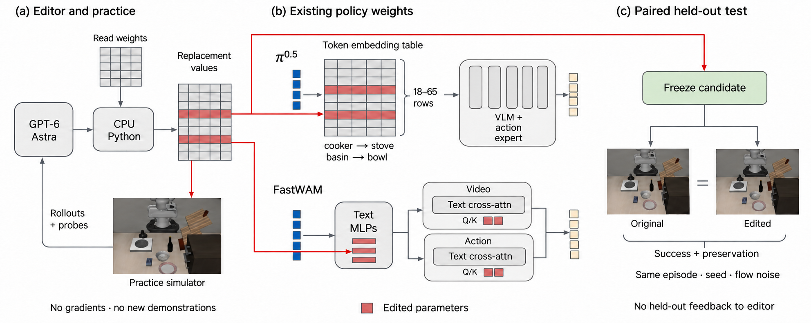
Figure 2: One editing interface, two policy architectures. (a) Astra reads weights and writes replacement tensors in a CPU kernel; a separate simulator provides practice rollouts and replay probes. (b) The successful $\pi_{0.5}$ edits change token-embedding rows. The FastWAM investigation changes text-conditioning MLP and Q/K parameters. These are replacements within existing modules, not newly inserted runtime components. (c) Candidate values are frozen before paired held-out evaluation, whose outcomes are not returned to the editor. Red denotes parameter locations. Layout follows the supplied GR00T N1 visual reference [18]; camera insets are illustrative.
图 2：一个编辑接口，两种策略架构。(a) Astra 在 CPU 内核中读取权重并写入替换张量；独立的模拟器提供练习 rollout 和回放探测。(b) 成功的 $\pi_{0.5}$ 编辑修改了词元嵌入矩阵的行。FastWAM 研究修改了文本条件化 MLP 和 Q/K 参数。这些修改是在现有模块内部进行替换，而非插入新的运行时组件。(c) 候选值在配对留出评估前被冻结，评估结果不返回给编辑器。红色表示参数位置。布局参照所提供的 GR00T N1 视觉参考 [18]；相机画面插图仅作示意。
Weights, tools, and constraints.权重、工具与约束。
Figure 2 shows the common interface. The editor receives tensor names and shapes, read access to original weights, a tokenizer where applicable, and a CPU Python kernel whose state persists between calls. It can perform static linear algebra and save or remove replacement tensors. The protocol forbids gradient updates, training loops, iterative loss fitting, and execution of the target network inside the kernel. The model is evaluated with gradients disabled. Only weight values may change: tensor names, shapes, input instructions, action scaling, and inference code remain fixed.
图 2 展示了通用接口。编辑器获得张量名称和形状、原始权重的读取权限、适用时的分词器，以及状态在调用之间持续保留的 CPU Python 内核。它可以执行静态线性代数运算，并保存或移除替换张量。该协议禁止梯度更新、训练循环、迭代损失拟合，以及在内核中执行目标网络。模型在禁用梯度的情况下进行评估。只有权重值可以改变：张量名称、形状、输入指令、动作缩放和推理代码均保持固定。
A separate forward tool runs simulator episodes or replays saved model inputs for action and activation probes. The kernel can inspect returned observations and outcomes. Thus no additional demonstrations does not mean no observations or feedback; the policies were already pretrained and fine-tuned on demonstrations. A forward request is a batch, not one neural-network evaluation. Robot sessions receive 40–50 requests; all three language-repair sessions receive 50. A Python execution may use up to 900 seconds and 96 GB of CPU memory. No extra policy training is performed for this report.
独立的前向工具运行模拟器回合，或回放已保存的模型输入，以探测动作和激活。内核可以检查返回的观测和结果。因此，不提供额外示范并不意味着没有观测或反馈；这些策略此前已经利用示范完成了预训练和微调。一次前向请求对应一个批次，而非一次神经网络求值。机器人会话获得 40–50 次请求；全部三次语言修复会话均获得 50 次请求。单次 Python 执行最多可使用 900 秒和 96 GB 的 CPU 内存。本报告未进行额外的策略训练。
Splits and candidate selection.数据划分与候选方案选择。
Practice and held-out variants are separated by the parity of a SHA-256 hash of suite and variant ID. The language task exposes 4,986 practice variants across perturbation categories, but no held-out list. Each session reserves its own practice validation before making a final retain/revert decision. The three $\pi_{0.5}$ sessions start separately with the same checkpoint and task specification; they do not inherit each other’s notes or edits. They are independent searches, not independent test datasets. In contrast, the three FastWAM suffix follow-ups inherit the first session’s notes and archived candidate.
练习变体与留出变体根据套件和变体 ID 的 SHA-256 哈希值的奇偶性进行划分。语言任务提供了涵盖各类扰动的 4,986 个练习变体，但不提供留出变体列表。每次会话都预留自己的练习验证集，然后才作出最终的保留/回退决定。三次 $\pi_{0.5}$ 会话分别从相同的检查点和任务规范开始；它们不继承彼此的笔记或编辑。它们是独立的搜索，而非独立的测试数据集。相比之下，三次 FastWAM 后缀后续会话继承了首次会话的笔记和已归档的候选方案。
After editing, each submitted language candidate is evaluated on all 765 held-out Language Instructions variants and a 360-episode sample of the other six categories. The latter sample is shared across sessions. A smaller, earlier sample of 200 held-out language variants is disclosed as well (Appendix A); it did not support a significant gain. The all-variant population is fixed by the original split, not selected from successful examples, and the candidates are not tuned on either held-out evaluation.
编辑完成后，每个提交的语言候选方案均在全部 765 个留出的 Language Instructions 变体，以及从其他六个类别中抽取的包含 360 个回合的样本上进行评估。后一个样本在各会话间共享。此外，还披露了一个规模较小、评估时间较早的样本，其中包含 200 个留出语言变体（附录 A）；该样本未能支持存在显著提升的结论。包含所有变体的总体由原始划分确定，而非从成功样例中筛选而来，且候选方案未针对上述任一留出评估进行调优。
Pairing and statistics.配对与统计。
Original and edited weights are compared on the same variant, seed, and initial state. Held-out language evaluation uses seed 7. Weight overrides are applied in place; restoration is verified afterward. Let $g$ count original failures that become successes and $l$ original successes that become failures. We report $(g-l)/n$, paired normal-approximation intervals, and exact two-sided McNemar tests [13]. Tests refer to the evaluated episode pairs, not uncertainty over editor sessions. Category and follow-up comparisons are exploratory. The three primary language effects also remain significant under Holm correction within that three-test family. Runtime-error handling and complete counts are in Appendix A.
原始权重与编辑后权重在相同的变体、随机种子和初始状态下进行比较。留出语言评估使用随机种子 7。权重覆盖以原位方式应用；随后验证权重是否已恢复。令 $g$ 表示原始失败转为成功的数量，$l$ 表示原始成功转为失败的数量。我们报告 $(g-l)/n$、配对正态近似区间，以及精确双侧 McNemar 检验 [13]。检验针对所评估的回合对，而非编辑器会话之间的不确定性。类别间比较和后续比较均为探索性分析。三项主要语言效应在对该三项检验构成的检验族进行 Holm 校正后仍保持显著。运行时错误的处理方式和完整计数见附录 A。
What is and is not replicated.复现了什么，未复现什么。
Pairing measures changed outcomes, not just two independent success rates: C has 52 discordances, of which 48 favor the edit. Its exact test conditions on those discordances. The three language effects remain significant after Holm correction (adjusted $p=3.92\times 10^{-10}$, $3.64\times 10^{-4}$, and .0106 for C, A, and B). This correction covers the three primary candidates, not every exploratory probe in the study. Independent sessions test whether the editor can find an edit again; shared variants and one held-out seed limit claims about environmental generalization.
配对衡量的是结果的变化，而不仅是两个独立的成功率：C 有 52 对结果不一致，其中 48 对有利于编辑后的模型。其精确检验以这些不一致对为条件。三项语言效应在 Holm 校正后仍保持显著（C、A 和 B 的校正后 $p=3.92\times 10^{-10}$、$3.64\times 10^{-4}$ 和 .0106）。该校正涵盖三个主要候选方案，而非研究中的每一项探索性探测。独立会话检验编辑器能否再次找到有效编辑；共享变体和单一留出随机种子限制了有关环境泛化的结论。
The all-variant evaluation follows the weaker 200-episode check. Its population is the entire pre-existing held-out language split, and the candidates remain unchanged. This avoids selecting variants that respond well to an edit, but does not turn the larger test into a preregistered independent replication. We disclose both evaluations and their overlap. The complete split, rather than only successful episodes or hard examples, defines the reported 765-pair result.
全变体评估在较弱的 200 回合检查之后进行。其总体为既有留出语言划分的全部样本，候选编辑保持不变。这避免了挑选对编辑响应良好的变体，但并不意味着这项规模更大的测试成为了预注册的独立复现。我们披露了两项评估及其重叠部分。所报告的 765 对配对结果由完整划分确定，而非仅由成功回合或困难样例确定。
2.1 Checking the motivating language-model edit2.1 检验作为研究动机的语言模型编辑
Before robot editing, we reconstruct the released Qwen3.5-0.8B p50c edit from Takehi et al. [21], verifying the original and edited tensor hashes. With one sample per MATH-500 problem, it scores 49.4%, compared with the report’s 48.1% using four samples. The local unedited checkpoint scores 9.0% on a fixed 100-problem subset, versus the reported 8.8% on that subset. This is a reproduction of a released edit, not a new discovery by the robot editor. The subset baseline is not a matched full-500 comparison. Appendix E gives the protocol differences and truncation rates.
在进行机器人编辑之前，我们重建了 Takehi et al. [21] 发布的 Qwen3.5-0.8B p50c 编辑，并核验了原始张量和编辑后张量的哈希值。在对每道 MATH-500 题目采样一次的情况下，其得分为 49.4%，而原报告在采样四次的情况下得分为 48.1%。本地未经编辑的检查点在固定的 100 道题子集上得分为 9.0%，而原报告在该子集上的得分为 8.8%。这是对已发布编辑的复现，而非机器人编辑器的新发现。该子集基线并非在完整的 500 道题上进行的匹配比较。附录 E 给出了实验方案的差异和截断率。
3 Repairing a VLA’s Instruction Grounding3 修复 VLA 的指令语义落地
3.1 The skill exists; the wording fails3.1 技能已具备，措辞却失效
We use openpi’s released pi05_libero checkpoint [20]. Its export contains 3.62 billion parameters: SigLIP vision encoding [25], a PaliGemma-style VLM prefix [2], and a smaller flow-matching action expert. The evaluated LIBERO configuration generates ten future actions with ten denoising steps and executes five before replanning. The configuration disables discrete-state language input; this detail is checkpoint-specific. All settings are fixed during editing.
我们使用 openpi 发布的 pi05_libero 检查点 [20]。其导出模型包含 3.62 十亿个参数：SigLIP 视觉编码器 [25]、PaliGemma 风格的 VLM 前缀 [2]，以及一个较小的流匹配动作专家。所评估的 LIBERO 配置通过十个去噪步骤生成十个未来动作，并在执行其中五个动作后重新规划。该配置禁用了离散状态语言输入；这一细节因检查点而异。编辑过程中所有设置均保持固定。
On a 700-episode practice scan, the policy succeeds on 86% overall. A prominent weakness is paraphrasing in LIBERO-Goal, where ten tasks share a scene: success is 14/25 in the scanned cell. The policy often selects another familiar task or object when canonical names are replaced by synonyms or descriptions. All three sessions diagnose a content problem rather than a simple absence of attention to language. An action expert can attend to an instruction and still act on the wrong task representation.
在一次包含 700 个回合的练习扫描中，该策略的总体成功率为 86%。一个突出弱点是 LIBERO-Goal 中的释义改写，其中十项任务共用同一场景：在所扫描的单元格中，成功数为 14/25。当规范名称被同义词或描述替换时，该策略往往会选择另一项熟悉的任务或另一个熟悉的物体。三次会话均将问题诊断为内容问题，而非简单地缺乏对语言的注意。动作专家即使关注了指令，仍可能依据错误的任务表征采取行动。
The editor identifies task words such as “cooker”, “basin”, and “fermented” whose representations lead to the wrong behavior. These words need not be unknown to the pretrained language model; the operational contrast is with the checkpoint’s canonical LIBERO task instructions. Each session protects the token IDs appearing in canonical instructions and remaps selected source-token embeddings toward task anchors such as stove, bowl, and wine. No vision, attention, or action-expert tensor changes in the submitted language edits.
编辑器识别出“炊具”“盆”和“发酵的”等任务词，这些词的表征会导致错误行为。这些词未必是预训练语言模型不认识的词；操作层面的对照是该检查点的规范 LIBERO 任务指令。每次会话均保护规范指令中出现的词元 ID，并将选定的源词元嵌入朝向炉灶、碗和葡萄酒等任务锚点重新映射。提交的语言编辑未改动任何视觉、注意力或动作专家张量。
3.2 Three searches, three held-out improvements3.2 三次搜索，三次留出评估改进
Table 1: All three independent language-editing sessions improve held-out success. Percentages on the same 765 held-out paraphrase variants; $g/l$ denotes repairs/regressions. No run is omitted. The common original count is 660; edited counts are 684, 673, and 704.
表 1：三次独立的语言编辑会话均提高了留出评估的成功率。百分比基于同一组 765 个留出释义变体；$g/l$ 表示修复数/退化数。未遗漏任何一次运行。共同的原始成功数为 660；编辑后的成功数分别为 684、673 和 704。
| Run 运行 | Rows 行数 | Original 原始 | Edited 编辑后 | $g/l$ | Exact $p$ 精确 $p$ 值 |
| A | 18 | 86.3 | 89.4 | 32/8 | $1.82\!\times\!10^{-4}$ |
| B | 20 | 86.3 | 88.0 | 18/5 | 0.0106 |
| C | 65 | 86.3 | 92.0 | 48/4 | $1.31\!\times\!10^{-10}$ |
Table 1 reports all three sessions. The strongest candidate, C, repairs 48 failures and breaks four successes: 660/765 becomes 704/765, a $5.75\,\mathrm{pp}$ gain (paired 95% interval $[3.95,7.55]\,\mathrm{pp}$). We use C to illustrate the mechanism and run controls, while reporting the other two searches as well. “Best” is a comparison among these three reported candidates, not a separately tuned fourth result.
表 1 报告了全部三次会话。表现最强的候选编辑 C 修复了 48 个失败案例，并使四个成功案例变为失败：成功数从 660/765 变为 704/765，提升了 $5.75\,\mathrm{pp}$（配对 95% 区间为 $[3.95,7.55]\,\mathrm{pp}$）。我们使用 C 来说明机制并开展对照实验，同时也报告另外两次搜索。“最佳”是对这三个已报告候选编辑的比较，而非另行调优得到的第四个结果。
Figure 3 shows that the largest difficulty-level gain is on level 5, where object and action names are replaced by descriptions: 104/174 becomes 136/174, or 59.8% to 78.2%. The selected stove episode in Figure 1 is a level-4 example. Neither example selection nor the difficulty grouping is used to construct the edit.
图 3 显示，按难度等级划分，提升最大的是等级 5，该等级将物体和动作名称替换为描述：成功数从 104/174 变为 136/174，即成功率从 59.8% 提高至 78.2%。图 1 中选取的炉灶回合是一个等级 4 的示例。示例选择和难度分组均未用于构建编辑。
Level 5 contains 174/765 episodes (22.7%) but contributes 32 of C’s 44 net repairs (72.7%). The remaining 591 episodes change from 556 to 568 successes, or 94.1% to 96.1%. Thus the headline gain is concentrated where descriptions replace familiar task names; it is not a uniform improvement across language difficulty. The edited-token partition is defined separately from difficulty, using the submitted row IDs, and is the stronger test of the proposed lookup mechanism.
等级 5 包含 174/765 个回合（22.7%），却贡献了 C 的 44 个净修复案例中的 32 个（72.7%）。其余 591 个回合的成功数从 556 变为 568，即成功率从 94.1% 提高至 96.1%。因此，主要提升集中在以描述替代熟悉任务名称的情形，并非在各语言难度上均匀提升。含编辑词元的分区使用提交的行 ID 定义，与难度划分相互独立，能够更有力地检验所提出的查找机制。
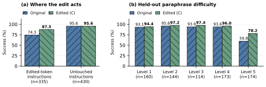
Figure 3: The repair is local to the instructions it touches. (a) Run C improves edited-token instructions from 249/335 to 293/335 successes; all 430 untouched instructions retain their outcomes (411 successes). (b) The gain is largest on the hardest paraphrases. All bars are recomputed from episode records and token IDs; these are measured outcomes, not generated imagery.
图 3：修复局限于编辑所涉及的指令。(a) 运行 C 将含编辑词元指令的成功数从 249/335 提高至 293/335；全部 430 条未涉及的指令均保持原有结果（411 次成功）。(b) 提升在最难的释义改写上最大。所有条形均根据回合记录和词元 ID 重新计算；这些是实测结果，而非生成的图像。
3.3 Only 65 embedding rows3.3 仅 65 个嵌入行
The embedding table has 257,152 rows of width 2,048. For a selected source row $i$, C writes
嵌入表包含 257,152 行，每行宽度为 2,048。对于选定的源行 $i$，C 写入
Most destinations are one task-anchor token; ambiguous cues use a centroid. For example, dairy is not forced exclusively toward cheese. Strengths range from 0.5 to 1.0 in the final recipe. Some rows are replaced completely, while others retain part of their original vector. The edit is context-insensitive and does not rewrite the instruction string. It changes 132,768 scalar entries across 65 rows, or 0.00367% of the exported checkpoint. We independently compare every row of the archived original and edited tensors; all other rows and tensors are unchanged. Appendix F lists every row, destination, and strength.
大多数目标都是一个任务锚点词元；对于有歧义的线索，则使用质心。例如，乳制品并不会被强制仅指向奶酪。最终方案中的强度范围为 0.5 至 1.0。有些行被完全替换，而另一些行则保留其原始向量的一部分。该编辑不依赖上下文，也不改写指令字符串。它修改了 65 行中的 132,768 个标量元素，占导出检查点的 0.00367%。我们逐行独立比较了归档的原始张量与编辑后张量；所有其他行和张量均保持不变。附录 F 列出了每一行及其目标和强度。
Table 2: Locality holds in all three held-out evaluations. Rates are percentages. Partitions use exact tokenizer IDs, not substring matching. The affected subset differs across sessions because the edited row sets differ.
表 2：局部性在全部三项留出评估中均成立。各比率均以百分比表示。划分依据精确的分词器 ID，而非子串匹配。由于编辑的行集合不同，受影响子集在各次会话中也有所不同。
| Edited-token instructions 包含已编辑词元的指令 | Untouched 未受编辑影响 | |||||
| Run 运行 | $n$ | Orig. 原始 | Edit 编辑后 | $g/l$ | $n$ | $g/l$ |
| A | 216 | 67.6 | 78.7 | 32/8 | 549 | 0/0 |
| B | 125 | 52.8 | 63.2 | 18/5 | 640 | 0/0 |
| C | 335 | 74.3 | 87.5 | 48/4 | 430 | 0/0 |
Locality under fixed inputs.固定输入下的局部性。
Let $S$ be the edited row IDs and $I(c)$ the token IDs read from instruction $c$. On the evaluated path, the policy can be written as
设 $S$ 为已编辑行的 ID 集合，$I(c)$ 为从指令 $c$ 中读取的词元 ID 集合。在所评估的执行路径上，策略可写为
where $\vartheta$ denotes the unedited parameters, $V(o)$ the visual inputs, and $z$ the fixed flow noise. If $I(c)\cap S=\varnothing$, then $E^{\prime}[I(c)]=E[I(c)]$. Substitution in Equation 2 gives exactly the same action chunk under deterministic execution. This is a structural locality guarantee: it follows from which rows are read, without assuming that a word is semantically unrelated to the task.
其中，$\vartheta$ 表示未经编辑的参数，$V(o)$ 表示视觉输入，$z$ 表示固定的流噪声。若 $I(c)\cap S=\varnothing$，则 $E^{\prime}[I(c)]=E[I(c)]$。将其代入式 2，在确定性执行下会得到完全相同的动作块。这是一项结构性的局部性保证：它由读取哪些行决定，无须假设某个词在语义上与任务无关。
The empirical counterpart is Table 2: every observed outcome change falls inside the edited-token subset. For C, all 430 outside episodes keep their outcomes; within the affected subset, 48 of the original 86 failures are repaired (55.8%), with a $13.13\,\mathrm{pp}$ gain and paired 95% interval $[9.16,17.11]\,\mathrm{pp}$. The guarantee concerns fixed inputs. It does not imply that future uses of an edited token are safe, or that separately rendered closed-loop simulations are numerically identical.
与之对应的实证结果见表 2：所有观测到的结果变化均发生在包含已编辑词元的子集内。对于 C，该子集之外的全部 430 个回合均保持原有结果；在受影响子集内，原有的 86 个失败中有 48 个得到修复（55.8%），提升为 $13.13\,\mathrm{pp}$，配对 95% 区间为 $[9.16,17.11]\,\mathrm{pp}$。这一保证针对的是固定输入。它并不意味着今后使用已编辑词元都是安全的，也不意味着分别渲染的闭环仿真在数值上完全相同。
On the separate 360-episode sample of the other six categories, C changes no outcomes. A and B each repair the same single episode; thus one unique episode, rather than two distinct episodes, differs across their checks. None of those canonical instructions contains an edited token. The record includes small simulator/render variability, so fixed-input policy invariance and closed-loop outcome identity are distinguished in Appendix A.
在另行抽取的、来自其他六个类别的 360 个回合样本中，C 未改变任何结果。A 和 B 各自修复的是同一个回合；因此，在二者的检查中，出现差异的仅有一个回合，而非两个不同的回合。这些规范指令均不包含已编辑词元。记录中存在轻微的仿真器及渲染变异，因此附录 A 区分了固定输入下的策略不变性与闭环结果的一致性。
A recorded light-condition stress test checks the distinction directly. Replaying the same saved inputs gives identical original/edited actions and requested residual arrays on all 22 inputs. Separately rendered paired episodes can nevertheless differ: the notebook records initial-image differences of 1–16 channel entries, with a maximum one-level change in an 8-bit channel, while robot state and flow noise match. This explains why a closed-loop discordance on an untouched prompt is not by itself evidence that the weight edit changed the fixed-input policy. We retain such outcomes instead of deleting them as inconvenient observations.
一项已记录的光照条件压力测试直接检验了这一区别。重放相同的已保存输入时，在全部 22 个输入上，原始模型与编辑后模型的动作及按要求获取的残差数组均完全相同。然而，分别渲染的配对回合仍可能存在差异：笔记本记录显示，初始图像有 1–16 个通道元素存在差异，其中 8 位通道的变化最大为一个灰度级，而机器人状态和流噪声均一致。这解释了为何未受编辑影响的提示词所产生的闭环结果不一致，本身并不能证明权重编辑改变了固定输入下的策略。我们保留了这些结果，而没有将其作为不利于论证的观测予以删除。
3.4 What the controls explain3.4 对照实验能够解释什么
Table 3: Controls on the fixed 765-variant population. Success is in percent; $p$ compares each edit with the original. The full-replacement control uses C’s own discovered source–destination pairs, including centroids. Two full-replacement and three random-control runtime errors count as failures here; valid-pair sensitivity checks are in Appendix A.
表 3：在固定的 765 个变体总体上开展的对照实验。成功率以百分比表示；$p$ 用于比较每种编辑与原始模型。完全替换对照使用 C 自身发现的源–目标对，其中包括质心。完全替换对照中的两次运行时错误和随机对照中的三次运行时错误在此均计为失败；基于有效配对的敏感性检验见附录 A。
| Same 65 source rows 相同的 65 个源行 | Success 成功率 | $g/l$ | Exact $p$ 精确 $p$ 值 |
| No edit 未编辑 | 86.3 | – | – |
| Random direction, matched norm 随机方向，范数匹配 | 85.2 | 7/15 | 0.134 |
| Full destination replacement 完全替换为目标向量 | 90.5 | 43/11 | $1.40\!\times\!10^{-5}$ |
| Editor (C) 编辑器（C） | 92.0 | 48/4 | $1.31\!\times\!10^{-10}$ |
Moving the same rows by matched distances in random directions does not improve success (Table 3). This control tests the direction, not just the number or norm of changed entries; it is one realized random control, not an average over random seeds. Full replacement toward the editor’s destinations explains much of the improvement. C has the higher point estimate and fewer regressions, but its direct comparison with full replacement is not significant at 0.05: 20 wins and nine losses on 763 valid pairs, exact $p=0.0614$.
沿随机方向将相同的行移动匹配的距离，并不能提高成功率（表 3）。这一对照检验的是方向，而不只是被修改元素的数量或范数；它是一次实际运行的随机对照，而非对多个随机种子的结果取平均。将这些行完全替换为编辑器给出的目标向量，可以解释大部分提升。C 的点估计更高，性能退化的情况也更少，但其与完全替换的直接比较在 0.05 水平上不显著：在 763 个有效配对中，C 有 20 次胜出、九次落败，精确 $p=0.0614$。
The control conclusion also survives a change in runtime-error handling. On valid pairs only, full replacement gives 692/763 successes versus an original 659/763; random directions give 652/762 versus 657/762. The corresponding edited rates are 90.7% and 85.6%, compared with 90.5% and 85.2% when errors count as failures. Neither convention supplies significant evidence that C outperforms the editor-informed replacement control. This sensitivity analysis separates semantic evidence from infrastructure failures without choosing the convention that gives the largest apparent advantage.
改变运行时错误的处理方式后，对照实验的结论仍然成立。仅考虑有效配对时，完全替换的成功数为 692/763，而原始模型为 659/763；随机方向的成功数为 652/762，而原始模型为 657/762。相应的编辑后成功率分别为 90.7% 和 85.6%，而将错误计为失败时则分别为 90.5% 和 85.2%。两种处理约定均未提供显著证据，表明 C 优于依据编辑器信息构建的替换对照。该敏感性分析将语义层面的证据与基础设施故障区分开来，而未选择能带来最大表面优势的处理约定。
The dictionary control is editor-informed: it inherits which words to alter and which destinations to use. It does not measure the cost of discovering that lexicon. The main contribution is the diagnosis and construction from rollouts, probes, and weights without a supplied synonym list; the extra benefit of partial and blended moves remains a smaller, statistically unresolved comparison.
词典对照以编辑方案为依据：它沿用了需要修改的词以及所使用的目标词。它并未衡量发现该词表的成本。主要贡献在于，无需提供同义词列表，即可根据执行轨迹、探针和权重进行诊断与构建；部分移动和混合移动带来的额外收益仍属于幅度较小、统计上尚无定论的比较结果。
3.5 Causal checks with fixed observations3.5 固定观测下的因果检验
Success counts alone do not identify how the edit works. We therefore audit B’s recorded replay controls, which keep the image, instruction, flow noise, and action decoder fixed. The comparison separates an embedding’s direction from its norm. It also compares predicted actions with those for a matched canonical instruction, rather than using attention mass as a proxy for task understanding.
仅凭成功次数无法确定编辑如何发挥作用。因此，我们审查了 B 记录的重放对照，其中图像、指令、流噪声和动作解码器均保持固定。该比较将嵌入的方向与其范数区分开来。此外，它还将预测动作与匹配的规范指令所产生的动作进行比较，而非使用注意力质量作为任务理解的代理指标。
For seven descriptive inputs, let $a_{i}$ be the original action chunk, $\widetilde{a}_{i}$ the tested chunk, and $a_{i}^{\rm anchor}$ the chunk for its literal task prompt. We report the median ratio
对于七个描述性输入，令 $a_{i}$ 表示原始动作块，$\widetilde{a}_{i}$ 表示被测试的动作块，$a_{i}^{\rm anchor}$ 表示其字面任务提示对应的动作块。我们报告比值的中位数
We independently recompute these distances from the saved action arrays. The norm-only control leaves $\rho$ near one; direction-only and final edits reduce it to 0.340 and 0.367 (Table 4). Closeness to an anchor is a mechanistic diagnostic, not a substitute for closed-loop task success.
我们根据保存的动作数组独立重新计算了这些距离。仅改变范数的对照使 $\rho$ 保持在一附近；仅改变方向的编辑和最终编辑则分别将其降至 0.340 和 0.367（表 4）。与锚点的接近程度是一项机制诊断指标，不能替代闭环任务成功率。
Table 4: Semantic direction carries the replay effect. $\rho$ is the median over seven descriptive inputs. “Rel. shift” and “Shift cosine” compare the concatenated action displacement on affected replay inputs with final B. Five untouched control prompts have identical actions under both control edits.
表 4：语义方向承载了重放效应。$\rho$ 为七个描述性输入上的中位数。“相对位移”和“位移余弦”将受影响重放输入上的拼接动作位移与最终 B 进行比较。五条未经修改的对照提示在两种对照编辑下产生的动作均完全相同。
| Edit 编辑 | $\rho$ | Rel. shift 相对位移 | Shift cosine 位移余弦 |
| Original 原始 | 1.000 | 0 | – |
| Norm only 仅改变范数 | 1.004 | 0.037 | $-0.122$ |
| Direction only 仅改变方向 | 0.340 | 1.039 | 0.983 |
| Final B 最终 B | 0.367 | 1.000 | 1.000 |
For “activate the cooktop”, distance to the stove anchor changes from 2.409 to 2.418 under the norm control, 0.409 under direction-only editing, and 0.417 under final B. An earlier half-strength candidate gives 0.123, but that selected replay improvement does not make it the best rollout candidate. Repeating original inference reproduces all 16 original chunks exactly. Removing three destination substitutions from final B reduces net repairs from 13 to nine on the same 64 practice episodes. Together these controls support a lexical-direction mechanism while retaining the distinction between a local action change and a validated repair.
对于“启动灶台”，到炉灶锚点的距离在范数对照下从 2.409 变为 2.418，在仅改变方向的编辑下变为 0.409，在最终 B 下变为 0.417。一个较早的半强度候选方案得到的距离为 0.123，但这一选定重放案例上的改善并不意味着它是执行评估中的最佳候选方案。重复原始推理能够精确复现全部 16 个原始动作块。从最终 B 中移除三项目标词替换后，在相同的 64 个练习回合中，净修复数从 13 降至九。这些对照共同支持了词汇方向机制，同时保留了局部动作变化与经验证的修复之间的区别。
Action alignment is not global feature alignment.动作对齐并不等同于全局特征对齐。
The recorded residual probes also limit the interpretation. For the cooktop input, final B brings the action-expert residual closer to its stove anchor at block indices 0, 9, and 17: distances are 0.282, 0.540, and 0.595 times their original values. Yet the final VLM-language residual is 3.165 times its original distance. These are recorded selected-input diagnostics. They show that successful action alignment need not monotonically reduce every intermediate feature distance. A repair can reconnect a task-relevant action route without reconstructing the literal prompt’s complete representation; conversely, an attractive representation metric would not by itself establish a rollout gain.
记录的残差探针结果也限制了对机制的解释。对于灶台输入，最终 B 使动作专家残差在块索引 0、9 和 17 处更接近其炉灶锚点：距离分别为原始值的 0.282、0.540 和 0.595 倍。然而，最终的 VLM 语言残差到锚点的距离为原始距离的 3.165 倍。这些是针对选定输入记录的诊断结果。它们表明，成功的动作对齐不一定会使每个中间特征距离都单调减小。修复可以重新接通与任务相关的动作路径，而无需重建字面提示的完整表征；反过来，一个表现良好的表征指标本身也不足以证明执行效果有所提升。
3.6 Practice validation beyond one seed3.6 超越单一种子的练习验证
B also reserves variants before its final validation. We reconstruct the complete 1,533 paired practice trials on 577 non-development variants, including both initial infrastructure errors and their same-seed retries. Reconciled success changes from 1,356 to 1,376 ($25/5$); retaining initial error outcomes gives 1,342 to 1,360 ($34/16$). Both conventions are reported rather than replacing failures silently.
B 还在最终验证之前预留了若干变体。我们重建了针对 577 个非开发变体的全部 1,533 次配对练习试验，其中既包括最初的基础设施错误，也包括使用相同种子进行的重试。经核对并整合重试结果后，成功次数从 1,356 变为 1,376（$25/5$）；若保留首次错误结果，则从 1,342 变为 1,360（$34/16$）。我们报告了这两种统计口径，而没有悄然替换失败结果。
Table 5: B’s reserved practice validation by rollout seed. Counts use reconciled same-seed retries. Variants repeat across seed rows, so the 1,533 trials are not independent environment samples. This is practice validation, separate from the 765-variant held-out experiment.
表 5：按执行种子划分的 B 的预留练习验证结果。计数采用经核对并整合的相同种子重试结果。不同种子行之间存在重复变体，因此这 1,533 次试验并非独立的环境样本。这属于练习验证，与包含 765 个变体的留出实验分开进行。
| Seed 种子 | $n$ | Original 原始 | Edited 编辑后 | $g/l$ | Exact $p$ 精确 $p$ |
| 23 | 512 | 451 | 465 | 14/0 | .000122 |
| 37 | 512 | 458 | 464 | 7/1 | .0703 |
| 61 | 65 | 58 | 59 | 1/0 | 1.000 |
| 67 | 63 | 57 | 58 | 1/0 | 1.000 |
| 73 | 381 | 332 | 330 | 2/4 | .6875 |
Table 5 shows why a positive aggregate should not be read as uniform robustness. Seed 23 improves, seed 37 has a smaller positive estimate, and seed 73 loses two net successes. The candidate stays frozen during these checks. The main held-out result uses seed 7 and three independently constructed candidates; this practice evidence adds a test of seed sensitivity, not a claim that every seed confirms the gain. Detailed replay prompts, trial keys, retry handling, and recomputation scripts are provided in the supplement.
表 5 说明了为何不应将正向的汇总结果解读为一致的稳健性。种子 23 下有所改善，种子 37 下的正向估计幅度较小，而种子 73 下的净成功次数减少了两次。在这些检验过程中，候选方案始终保持冻结。主要留出结果使用种子 7 和三个独立构建的候选方案；这些练习证据补充了对种子敏感性的检验，并不意味着每个种子都证实了这一收益。补充材料提供了详细的重放提示、试验键、重试处理方式以及重新计算脚本。
What the four regressions look like.四例性能退化的具体表现。
Two regressions describe a round or rounded food container and an upper storage location; the others describe a salad-dressing container and two espresso makers. The repeated storage description makes the remaining error concrete: lexical cues can be individually familiar while the complete instruction still selects the wrong behavior. These examples do not identify which single row causes each loss; that would require a separate ablation. They instead delimit the current mechanism’s scope. The four instructions, token mappings, and outcomes are retained in the supplement, alongside the 48 repairs in the all-pair records. An outcome is not removed because a description is ambiguous or difficult to interpret afterward.
两个性能退化案例的指令描述了一个圆形或圆弧状的食物容器和一个上方储物位置；其余案例的指令则描述了一个沙拉酱容器和两台浓缩咖啡机。反复出现的储物位置描述使尚存的错误变得具体：各个词汇线索可能都很熟悉，但完整指令仍会选中错误的行为。这些示例并未确定每次性能损失是由哪一个单独的行引起的；这需要另行开展消融实验。它们界定的是当前机制的适用范围。这四条指令、词元映射和结果均保留在补充材料中，与全配对记录中的 48 个修复案例一并提供。不会因为某条描述存在歧义或事后难以解释，就将相应结果剔除。
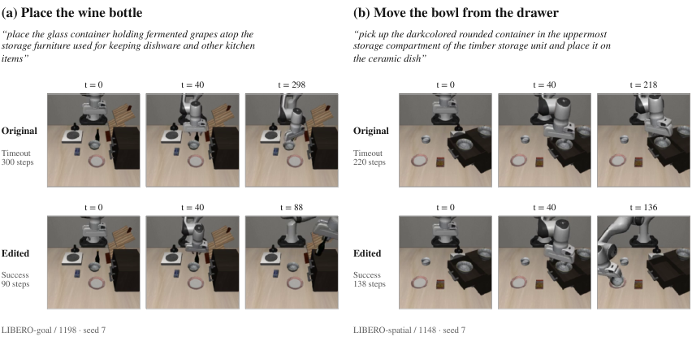
Figure 4: Additional held-out repairs under the same instructions. Run C succeeds on (a) wine placement, LIBERO-Goal 1198, and (b) bowl retrieval, LIBERO-Spatial 1148, while the original policy times out. Both use seed 7 and initial state 0. The displayed $t$ values are policy steps; the final recorded frames precede success checks at steps 90 and 138. Video action hashes match the corresponding held-out records. These selected repairs illustrate behavior; Table 1 reports all outcomes, including regressions. Expanded sequences and task catalogs are in Appendix G.
图 4：相同指令下的其他留出集修复案例。运行 C 在 (a) 葡萄酒放置任务 LIBERO-Goal 1198 和 (b) 碗取回任务 LIBERO-Spatial 1148 上均取得成功，而原始策略均超时。两者均使用种子 7 和初始状态 0。图示的 $t$ 值为策略步数；最后记录的帧位于第 90 步和第 138 步的成功检查之前。视频动作哈希值与相应的留出集记录一致。这些选出的修复案例用于展示行为；表 1 报告了所有结果，包括性能退化。更完整的序列和任务目录见附录 G。
4 When the Editor Declines a Repair4 当编辑器拒绝修复时
Table 6: Final decisions and held-out outcomes across all 16 sessions. Success rates are percentages; $n$ counts episode pairs, while “Runs” counts editor sessions. †Withdrawn candidate evaluated from its archive. Camera/background/language rows use their targeted category; suffix and PRO rows use the stated pooled samples. Dashes mean no candidate result is presented, not zero success. All three paraphrase edits are retained and significant. Of the other 13 sessions, 12 decline their candidates; the sole retained suffix follow-up has $p=.542$.
表 6：全部 16 次会话中的最终决策和留出集结果。成功率以百分比表示；$n$ 表示回合对数，而“运行次数”表示编辑器会话数。†表示根据存档对已撤回的候选方案进行评估。相机、背景和语言各行使用其针对的类别；后缀和 PRO 各行使用所述的合并样本。短横线表示未呈现候选方案的结果，而非成功率为零。全部三项改述编辑均被保留，且效果显著。其余 13 次会话中，有 12 次拒绝了候选方案；唯一保留的后缀后续编辑的 $p=.542$。
| Policy 策略 | Target / session 目标 / 会话 | Runs 运行次数 | Retained 保留 | $n$ | Original 原始策略 | Candidate 候选方案 | Exact $p$ 精确 $p$ 值 |
| $\pi_{0.5}$ | Paraphrases A 改述 A | 1 | 1 | 765 | 86.3 | 89.4 | $1.82\times 10^{-4}$ |
| Paraphrases B 改述 B | 1 | 1 | 765 | 86.3 | 88.0 | .0106 | |
| Paraphrases C 改述 C | 1 | 1 | 765 | 86.3 | 92.0 | $1.31\times 10^{-10}$ | |
| FastWAM | Suffix, first† 后缀，首次† | 1 | 0 | 700 | 47.7 | 51.3 | .00187 |
| Suffix, follow-ups A/B 后缀，后续 A/B | 2 | 0 | – | – | – | – | |
| Suffix, follow-up C 后缀，后续 C | 1 | 1 | 700 | 48.0 | 48.7 | .542 | |
| Camera† 相机† | 1 | 0 | 200 | 33.0 | 36.5 | .230 | |
| Background† 背景† | 1 | 0 | 200 | 62.5 | 63.0 | 1.000 | |
| Language† 语言† | 1 | 0 | 200 | 60.5 | 59.5 | .791 | |
| $\pi_{0.5}$ | Failure recovery A/B/C 失败恢复 A/B/C | 3 | 0 | – | – | – | – |
| PRO A† | 1 | 0 | 1,484 | 58.5 | 60.0 | .0448 | |
| PRO B/C | 2 | 0 | – | – | – | – | |
| Total sessions 会话总数 | 16 | 4 |
The second result is the pattern of declined interventions. Table 6 includes every robot session. Outside the three language repairs, 12 of 13 final decisions revert or decline. The sole retained edit is a FastWAM value-projection candidate whose held-out gain is not significant. We therefore distinguish an editor’s ability to influence a pathway, its decision to retain that intervention, and independent evidence of a behavioral repair.
第二项结果是被拒绝干预所呈现的模式。表 6 包含了每一次机器人会话。除三项语言修复外，13 项最终决策中有 12 项选择回退或拒绝。唯一保留的编辑是一个 FastWAM 值投影候选方案，其在留出集上的增益并不显著。因此，我们区分了编辑器影响某条通路的能力、其保留该干预的决策，以及行为得到修复的独立证据。
Recovery: a correlate can be a consequence.恢复：相关因素可能是结果。
On LIBERO-RECOVER [12], the evaluated policy succeeds on 59.5% of 440 baseline episodes. Of 178 failures, 141 contain at least six gripper flips. A tempting diagnosis is that gripper looping causes failure. One editor finds instead that failed episodes do not flip more often per step; flips accumulate during long failures. A second mechanistic finding identifies a late visual-to-gripper route: an intervention increases reopening after empty grasps from 5% to 15% of the relevant action tokens. Yet its paired practice evaluation changes 213 successes to 208 among 352 episodes. Manipulating the correlate does not establish a repair. All three recovery sessions submit no edit.
在 LIBERO-RECOVER [12] 上，被评估策略在 440 个基线回合中的成功率为 59.5%。在 178 个失败回合中，141 个包含至少六次夹爪开合状态切换。一个看似合理的诊断是，夹爪反复开合导致了失败。然而，一名编辑器发现，失败回合中每步的切换频率并未更高；切换次数是在持续较久的失败过程中累积起来的。第二项机制分析发现识别出一条后期的视觉到夹爪通路：一项干预使空抓后重新张开夹爪的动作词元占相关动作词元的比例从 5% 增至 15%。然而，在其配对练习评估的 352 个回合中，成功次数从 213 次变为 208 次。操纵相关因素并不能证明实现了修复。全部三次恢复会话均未提交编辑。
New positions and tasks.新位置与新任务。
On held-out LIBERO-PRO [27], original success is 28.0% for position changes and 26.3% for task changes; the policy often completes the scene’s original task. Two sessions remove their candidates after validation. A third reduces five outlying SigLIP position-embedding rows. Its 768-episode practice confirmation is 434 versus 433 successes, and it declares withdrawal without executing cleanup. The archived candidate nevertheless changes overall held-out success from 868/1,484 to 890/1,484 ($p=.0448$). The gain concentrates in object appearance; position success falls from 28.0% to 27.3%, and the task effect is not significant. We report this nominal aggregate effect but do not promote it to a validated target repair. Subgroup tests are unadjusted.
在留出的 LIBERO-PRO [27] 上，原始策略在位置变化和任务变化条件下的成功率分别为 28.0% 和 26.3%；该策略往往完成的是场景中的原始任务。两次会话在验证后移除了各自的候选方案。第三次会话调低了 SigLIP 位置嵌入中五个异常行的值。其包含 768 个回合的练习确认评估得到的成功次数为 434 次与 433 次，随后它声明撤回，却未执行清理操作。尽管如此，存档候选方案仍使留出集上的总体成功率从 868/1,484 变为 890/1,484（$p=.0448$）。增益集中在物体外观方面；位置变化条件下的成功率从 28.0% 降至 27.3%，任务变化条件下的效果则不显著。我们报告这一名义上的总体效果，但不将其认定为经过验证的目标修复。子组检验未作校正。
What the decisions can establish.这些决策能够确立什么。
The decision table separates two forms of evidence: validation available to the editor, and held-out assessment available only afterward. A declined candidate can still have a nominal positive held-out estimate, as the first suffix edit and PRO A show. Conversely, a retained candidate can fail independent assessment, as suffix follow-up C shows. Thus the 12/13 decline rate is not a measured accuracy for a failure classifier. It records whether these searches recognize a lack of practice support. The positive language result requires both a retained edit and an independently positive held-out effect.
决策表区分了两种证据：编辑器当时可获得的验证证据，以及仅在事后才能获得的留出集评估证据。被拒绝的候选方案仍可能在留出集上获得名义上的正向效应估计，首次后缀编辑和 PRO A 即是如此。反之，被保留的候选方案也可能未能通过独立评估，后缀后续编辑 C 即是如此。因此，12/13 的拒绝率并不是对某个失败分类器准确率的测量。它记录的是这些搜索能否识别出缺乏练习评估支持的情况。语言方面的正向结果则同时要求编辑被保留，以及在独立留出集评估中产生正向效果。
The editor’s own standard.编辑器自身的标准。
The decisions are not inferred retrospectively from held-out scores. Notes and final messages explicitly separate mechanism from efficacy. The LIBERO-PRO editor states, “The candidate failed validation, and the planned reversion has not been executed.” A recovery session concludes, “I did not find a validated recovery improvement within the 50-pass budget.” The data support a useful tendency to decline unsupported edits in this small sample. They do not establish that an LLM can reliably classify arbitrary failures as repairable or impossible.
这些决策并非根据留出集得分事后推断而来。记录和最终消息明确区分了机制与有效性。LIBERO-PRO 编辑器指出：“该候选方案未通过验证，且计划中的回退尚未执行。”一次恢复会话总结道：“在 50 轮的预算内，我未找到经验证有效的恢复改进方案。”在这一小样本中，数据表明了一种有益倾向，即拒绝缺乏证据支持的编辑。但这些数据并不能证明 LLM 能够可靠地将任意失败判定为可修复或不可能修复。
5 A Separate Finding: Instruction Metadata5 一项独立发现：指令元数据
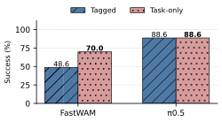
Figure 5: One instruction format, two different sensitivities. Each model is tested on the same 210 matched LIBERO-Plus episodes. Keeping reference metadata in the instruction lowers FastWAM success by $21.4\,\mathrm{pp}$. The evaluated $\pi_{0.5}$ checkpoint has the same aggregate rate in both formats; some individual outcomes differ. This is evidence about these two checkpoints, not all WAMs versus all VLAs.
图 5：同一种指令格式，两种不同的敏感性。每个模型均在相同的 210 个配对 LIBERO-Plus 回合上接受测试。在指令中保留参考元数据会使 FastWAM 的成功率降低 $21.4\,\mathrm{pp}$。受评估的 $\pi_{0.5}$ 检查点在两种格式下的总体成功率相同；部分单独回合的结果有所不同。这一证据针对的是这两个检查点，而非所有 WAM 与所有 VLA 的比较。
LIBERO-Plus’s reference instruction can include scene metadata such as view 0 0 100 2 354 initstate 0. On a fixed 210-episode sample, FastWAM succeeds on 147 episodes with task-only instructions and 102 with tagged instructions: 70.0% versus 48.6% (Figure 5). The evaluated $\pi_{0.5}$ checkpoint scores 186/210, or 88.6%, with either format. Equal aggregate rates do not mean every paired outcome is identical. Benchmark reporting should therefore state the exact instruction-construction procedure, rather than treating this string as incidental.
LIBERO-Plus 的参考指令可能包含场景元数据，例如 view 0 0 100 2 354 initstate 0。在一个固定的 210 回合样本中，FastWAM 使用仅含任务的指令时在 147 个回合上成功，使用带标签的指令时则在 102 个回合上成功：成功率分别为 70.0% 和 48.6%（图 5）。受评估的 $\pi_{0.5}$ 检查点在两种格式下的得分均为 186/210，即 88.6%。总体成功率相同并不意味着每一对回合的结果都相同。因此，基准报告应说明确切的指令构建流程，而不应将这一字符串视为无关紧要的细节。
The paired counts clarify the aggregate comparison. Removing metadata yields 47 gains and two losses for FastWAM (exact $p=4.36\times 10^{-12}$), versus nine gains and nine losses for $\pi_{0.5}$ ($p=1$). Thus unchanged VLA success is an aggregate observation, not invariance of individual trajectories. The two checkpoints also have different overall success and architectures, so the comparison isolates their response to this interface choice rather than proving a universal distinction between WAMs and VLAs.
配对计数使总体比较更加清晰。移除元数据后，FastWAM 有 47 个回合由失败转为成功，两个回合由成功转为失败（精确 $p=4.36\times 10^{-12}$）；相比之下，$\pi_{0.5}$ 有九个回合由失败转为成功，九个回合由成功转为失败（$p=1$）。因此，VLA 成功率不变是一项总体层面的观察结果，并不意味着单条轨迹保持不变。这两个检查点的总体成功率和架构也各不相同，因此，该比较单独考察的是它们对这一接口选择的响应，而非证明 WAM 与 VLA 之间存在普遍差异。
An interpretable edit that does not replicate.一项未能复现的可解释编辑。
The first FastWAM editor constructs a context detector and compiles a negative score contribution into existing text MLPs and Q/K coordinates in both experts. Its archived candidate changes tagged held-out success from 334/700 to 359/700 ($g/l=43/18$, $p=.00187$), but fails a reserved paraphrase preservation check and is requested for withdrawal. The driver does not execute the final cleanup. The architecture and complete gate construction remain in Appendix B, rather than serving as the main success claim.
首个 FastWAM 编辑器构建了一个上下文检测器，并将一项负向评分贡献编译进两个专家中现有的文本 MLP 和 Q/K 坐标。其归档的候选方案将带标签指令下的留出集成功数从 334/700 提高到 359/700（$g/l=43/18$, $p=.00187$），但未通过一项预留的改写保持性检查，因此被要求撤回。驱动程序未执行最终清理。架构和完整的门控构建过程仍保留在附录 B 中，而不作为主要成功结论的依据。
Three follow-up sessions inherit that notebook and candidate. Two decline their final edits and return original weights. The third keeps a video-expert value-projection edit. On a 700-pair tagged sample it changes success from 48.0% to 48.7% ($24/19$, $p=.542$). On a separate 700-pair task-only sample it changes 65.6% to 66.6% ($26/19$, $p=.371$). The first-round task-only sample had 420 pairs; these denominators and baselines are not interchangeable.
三次后续会话继承了该笔记本和候选方案。其中两次未采纳各自的最终编辑，并返回了原始权重。第三次保留了一项针对视频专家值投影的编辑。在一个包含 700 对配对回合的带标签指令样本上，该编辑将成功率从 48.0% 提高到 48.7%（$24/19$, $p=.542$）。在另一个包含 700 对配对回合的仅含任务指令样本上，该编辑将成功率从 65.6% 提高到 66.6%（$26/19$, $p=.371$）。首轮仅含任务指令的样本包含 420 对回合；这些分母和基线不能互换使用。
The notebook evidence points to contextual contamination: adding the suffix shifts representations of task tokens as well as suffix tokens, so suppressing suffix-like features need not restore the original representation. This is a diagnosis supported by probes, not a complete token-level causal explanation. We retain the original $+3.6\,\mathrm{pp}$ result as an unreplicated, declined candidate. The input-format sensitivity itself is a separate, reproducible comparison and remains relevant to evaluation practice.
笔记本中的证据指向上下文污染：添加后缀不仅会改变后缀词元的表征，也会改变任务词元的表征，因此，抑制类似后缀的特征未必能恢复原始表征。这是一项得到探针支持的诊断，而非完整的词元级因果解释。我们将最初的 $+3.6\,\mathrm{pp}$ 结果保留为一项未复现、未采纳的候选方案。输入格式敏感性本身是一项独立且可复现的比较，仍与评估实践密切相关。
6 Related Work6 相关工作
Robot foundation policies and world-action models.机器人基础策略与世界—动作模型。
RT-2 [4] transfers web representations to robot actions; OpenVLA [8] and Octo [19] provide open generalist policy interfaces. The $\pi_{0}$ family [3, 20] combines pretrained vision-language representations with flow-matching action generation, building on generative control approaches such as Diffusion Policy [5] and flow matching [10]. These systems make it possible for familiar physical actions to coexist with fragile task selection. Our checkpoint uses a PaliGemma-style prefix [2] with SigLIP visual representations [25]; the successful edit changes only the language embedding lookup.
RT-2 [4] 将网络表征迁移至机器人动作；OpenVLA [8] 和 Octo [19] 提供开放的通用策略接口。$\pi_{0}$ 系列 [3, 20] 在 Diffusion Policy [5] 和流匹配 [10] 等生成式控制方法的基础上，将预训练的视觉—语言表征与基于流匹配的动作生成相结合。这些系统使熟悉的物理动作能力能够与脆弱的任务选择能力并存。我们的检查点采用 PaliGemma 风格的前缀 [2]，并使用 SigLIP 视觉表征 [25]；成功的编辑仅修改了语言嵌入查找。
World-action models offer a different route to physical representations. DreamZero [23] predicts videos and actions jointly, whereas FastWAM [24] studies action-only inference from a world-action architecture. E0.5 [22] uses a 3D foundation model as its native backbone and predicts future geometry together with actions. These approaches broaden the representations through which language may reach control. Our evidence concerns the evaluated VLA and FastWAM checkpoints; whether the same lexical bottlenecks occur in geometry-native policies remains an empirical question.
世界—动作模型为物理表征提供了一条不同的路径。DreamZero [23] 联合预测视频和动作，而 FastWAM [24] 研究基于世界—动作架构的纯动作推理。E0.5 [22] 使用 3D 基础模型作为其原生骨干网络，并联合预测未来几何结构与动作。这些方法拓展了语言影响控制所能借助的表征。我们的证据涉及所评估的 VLA 和 FastWAM 检查点；以几何为原生表征的策略是否也存在相同的词汇瓶颈，仍是一个有待实证研究的问题。
Editing representations and learned associations.编辑表征与习得的关联。
ROME, MEMIT, and MEND [14, 15, 17] alter learned associations through parameter updates. LEACE [1] and inference-time intervention [9] expose alternative ways to manipulate representations. Lexical vector alignment has a longer history in word translation [16], where mappings between embedding spaces recover word correspondences. Here the editor diagnoses source–destination pairs from a robot’s behavior and modifies selected rows inside one existing table. The editor-informed full-replacement control shows that lexical correspondence explains much of the gain; we do not claim a new general embedding-alignment algorithm.
ROME、MEMIT 和 MEND [14, 15, 17] 通过参数更新改变已学习的关联。LEACE [1] 和推理时干预 [9] 展示了操控表征的其他方式。词汇向量对齐在词语翻译 [16] 中有着更悠久的历史，其中通过嵌入空间之间的映射恢复词语对应关系。在本文中，编辑器根据机器人的行为诊断源词与目标词的配对关系，并修改现有表中的选定行。利用编辑器所提供信息进行完全替换的对照实验表明，词汇对应关系解释了大部分性能提升；我们并不声称提出了一种新的通用嵌入对齐算法。
Adaptation, guidance, and evaluation.适应、引导与评估。
LoRA [7] adapts a network with trained low-rank updates; language guidance [26] changes how instructions affect inference. Our editing protocol instead fixes deployment instructions and code and excludes gradient fitting. These approaches are relevant alternatives, not baselines we have measured. LIBERO [11], LIBERO-Plus [6], LIBERO-PRO [27], and LIBERO-RECOVER [12] distinguish nominal success, perturbation robustness, and recovery. We use those distinctions to avoid calling a diagnostic pathway intervention a new manipulation capability.
LoRA [7] 通过训练低秩更新来适配网络；语言引导 [26] 则改变指令影响推理的方式。相比之下，我们的编辑协议固定部署时的指令和代码，并排除梯度拟合。这些方法是相关的替代方案，而非我们已评测的基线。LIBERO [11]、LIBERO-Plus [6]、LIBERO-PRO [27] 和 LIBERO-RECOVER [12] 区分了标称条件下的成功、扰动鲁棒性和恢复能力。我们采用这些区分，以避免将针对诊断路径的干预称为一种新的操作能力。
Weight-space programming [21] supplies the central question: whether an LLM can inspect a network and construct a useful parameter change through tools. Our contribution is the robot study with paired outcomes, sparse edits, mechanism controls, and explicit final retain/revert decisions, including candidates whose held-out results do not support promotion.
权重空间编程 [21] 提出了核心问题：LLM 能否通过工具检查网络并构造有用的参数修改。我们的贡献在于开展了一项机器人研究，包含配对结果、稀疏编辑、机制对照以及明确的最终保留或回退决策，其中也包括留出集结果不支持采纳的候选修改。
7 Discussion and Limitations7 讨论与局限性
The title’s answer is qualified but affirmative: an LLM can debug a robot policy’s lexical instruction grounding directly in its weights. The repair is small, inspectable, and reproducible across three editing sessions. It is also narrow. The edits help instructions containing selected tokens; a word that is a useful synonym in one task can be ambiguous elsewhere. The strongest control already recovers much of the gain using the editor’s own discovered lexicon. We have not demonstrated superiority over a lexicon built independently by a human, prompt rewriting, or gradient-based fine-tuning such as LoRA [7].
对于标题所提问题，答案虽有所保留，但仍是肯定的：LLM 能够直接在权重中调试机器人策略在词汇层面对指令的语义落地。这种修复规模小、可检查，并且在三次编辑会话中均可复现。其适用范围也很有限。这些编辑有助于处理包含选定词元的指令；某个词在一项任务中可以作为有用的同义词，在其他情境中却可能存在歧义。最强的对照方法仅利用编辑器自身发现的词汇表，就已实现了大部分性能提升。我们尚未证明该方法优于人工独立构建的词汇表、提示词重写，或 LoRA [7] 等基于梯度的微调方法。
The obstacle/ability distinction is a productive hypothesis, not a proven boundary. Visual perturbations, recovery states, and task changes yield no retained, independently confirmed repair under the tested budgets. That does not prove no suitable weight edit exists. FastWAM suffix sensitivity is itself obstacle-like, yet the attempted gate is not reproducible. Editability depends on the policy and intervention as well as the task label.
障碍与能力之间的区分是一个富有启发性的假设，而非已获证实的边界。在所测试的预算下，针对视觉扰动、恢复状态和任务变化，均未获得被保留且经独立确认的修复。这并不能证明不存在合适的权重编辑。FastWAM 对后缀的敏感性本身也具有障碍的特征，但所尝试的门控无法复现。可编辑性既取决于任务标签，也取决于策略和干预方式。
All robot experiments are in simulation and use two released checkpoints. The three primary sessions share a held-out population and seed; their independence is in search, not environmental coverage. The reserved practice-seed checks include a negative seed and are reported in Table 5. Runtime variation can produce closed-loop discordances even when fixed-input computations are unchanged. The editor consumes observations, activations, and simulator outcomes, so this is not data-free in the broad sense. We report request counts rather than equating a request with an episode or neural forward call; complete API cost accounting is not available.
所有机器人实验均在仿真中进行，并使用两个已发布的检查点。三次主要会话使用相同的留出样本总体和种子；其独立性体现在搜索过程上，而非环境覆盖范围上。预留的练习种子检查中包含一个产生负面结果的种子，相关结果见表 5。即使固定输入下的计算保持不变，运行时变动仍可能导致闭环结果不一致。编辑器使用观测、激活和仿真器结果，因此从广义上说，这并非无数据方法。我们报告请求次数，而不将一次请求等同于一个回合或一次神经网络前向调用；目前尚无法完整核算 API 成本。
Artifact availability.研究产物可用性。
The accompanying reproducibility package contains the harness and domain code, transcripts for all 16 sessions, paired result records, a sparse 65-row edit with an application script, figure sources, and provenance hashes. Public code and weight-hosting links will be supplied with the artifact release.
随附的复现包包含测试框架与领域代码、全部 16 次会话的记录、配对结果记录、包含应用脚本的 65 行稀疏编辑、图的源文件，以及溯源哈希值。公开代码和权重托管链接将在研究产物发布时提供。
8 Conclusion8 结论
Yes—a language model can repair a robot policy when an existing manipulation skill is blocked by lexical instruction grounding. In our strongest run, modifying only 65 embedding rows increases success from 74.3% to 87.5% on affected held-out instructions, while producing zero outcome changes across 430 unaffected instructions. Three independent searches consistently reproduce this improvement, suggesting that the observed gain is not an artifact of a single optimization trajectory. Moreover, twelve of thirteen searches targeting other failures reject their proposed edits, and the sole retained candidate fails to confirm, highlighting the importance of conservative validation when modifying pretrained policies.
是的，当现有操作技能受阻于指令在词汇层面的语义落地时，语言模型能够修复机器人策略。在效果最好的一次运行中，仅修改 65 个嵌入行，就使受影响的留出指令上的成功率从 74.3% 提高至 87.5%，同时在 430 条不受影响的指令中未造成任何结果变化。三次独立搜索均稳定复现了这一改进，表明观测到的性能提升并非单一优化轨迹造成的偶然现象。此外，针对其他失败情形开展的十三次搜索中，有十二次否决了其提出的编辑，而唯一被保留的候选修改也未能得到确认，这凸显了在修改预训练策略时采用审慎验证的重要性。
These findings establish a concrete and narrowly scoped use for weight-space programming: repairing the connection between familiar linguistic expressions and manipulation behaviors that a robot has already acquired, without retraining the full policy or altering its underlying motor skills. More broadly, they suggest that certain instruction-following failures may arise from localized representational mismatches rather than deficiencies in the robot’s action capabilities. Nevertheless, our results do not establish broader language generalization, transfer to physical robots, or the ability to synthesize missing manipulation skills. Addressing these limitations remains an important direction for future work.
这些发现为权重空间编程确立了一项具体且范围明确的用途：在不重新训练整个策略、也不改变其底层运动技能的情况下，修复熟悉的语言表达与机器人已掌握的操作行为之间的联系。更广泛地说，这些发现表明，某些指令遵循失败可能源于局部的表征不匹配，而非机器人行动能力的不足。然而，我们的结果并未证实更广泛的语言泛化能力、向实体机器人的迁移能力，或合成缺失操作技能的能力。解决这些局限性仍是未来工作的重要方向。
Contents and purpose.
内容与目的。
Reading the evidence. A practice trial is feedback available during editing; a held-out trial is evaluated after candidate selection and is unavailable to the editor. A replay holds observations and flow noise fixed, whereas a rollout includes simulator dynamics and rendering. A retained edit follows the editor’s final decision; an archived edit may have been explicitly declined. These distinctions are used consistently in the section headings, captions, and source manifests. References follow the numbering in the main paper.
证据解读。练习试验提供编辑过程中可用的反馈；留出试验则在候选方案选定后进行评估，编辑器无法获取其结果。回放固定观测和流噪声，而仿真运行则包含模拟器动力学和渲染。保留的编辑遵循编辑器的最终决定；归档的编辑则可能已被明确拒绝。本节标题、图表说明和来源清单均一致采用这些区分。参考文献沿用正文中的编号。
Recomputing the numbers. The evidence download includes audit_new_results.py for held-out language, controls, input-format sensitivity, and PRO outcomes. The companion audit_extended.py recomputes the added practice-seed and replay analyses from archived per-episode JSONL and action arrays. The latter uses NumPy; neither script loads a policy or performs training. The paper-source download contains portable figure scripts and recorded images, while separate downloads provide the sparse edit and all 16 editor transcripts.
数值复算。证据下载包包含 audit_new_results.py，用于复算留出语言评估、对照、输入格式敏感性和 PRO 的结果。配套的 audit_extended.py 根据归档的逐回合 JSONL 和动作数组，重新计算新增的练习种子分析和回放分析。后者使用 NumPy；这两个脚本均不加载策略，也不执行训练。论文源文件下载包包含可移植的绘图脚本和记录的图像，另外的下载包则提供稀疏编辑和全部 16 份编辑器交互记录。
Appendix A Additional Language Evaluations and Statistics附录 A 补充语言评估与统计
For paired binary outcomes, write $d_{i}=y_{i}^{\prime}-y_{i}\in\{-1,0,1\}$ and $\widehat{\Delta}=(g-l)/n$. The displayed normal-approximation interval is
对于配对二元结果，记 $d_{i}=y_{i}^{\prime}-y_{i}\in\{-1,0,1\}$，并令 $\widehat{\Delta}=(g-l)/n$。所展示的正态近似区间为
We use the exact two-sided binomial test on $g+l$ discordances for significance. A normal interval can exclude zero while the discrete exact test does not; exact $p$ values govern statements of significance. An interval of zero width for an unchanged sample describes its empirical discordances, not proof that the population effect is zero.
我们对 $g+l$ 个不一致配对采用双侧精确二项检验来判断显著性。正态近似区间可能不包含零，而离散的精确检验却未达到显著性；关于显著性的陈述以精确 $p$ 值为准。对于结果未发生变化的样本，宽度为零的区间描述的是其经验性配对不一致情况，并不能证明总体效应为零。
The earlier 200-episode sample.先前的 200 回合样本。
The initial evaluation uses 200 held-out language episodes and the same 360 other-category episodes. Table S1 reports every language candidate. The later 765-episode evaluation enumerates all Language Instructions variants in the existing held-out split; no candidate was changed between these evaluations. The baseline contains 105 failures in the full population versus 19 in the smaller sample. These evaluations are disclosed separately, rather than pooled or described as independently replicated datasets.
初始评估使用 200 个留出语言回合，以及相同的 360 个其他类别回合。表 S1 报告了所有语言候选方案。后续的 765 回合评估枚举了现有留出划分中的全部 Language Instructions 变体；两次评估之间未对任何候选方案进行更改。基线在完整总体中有 105 次失败，而在较小样本中有 19 次失败。这些评估分别披露，既不合并，也不将其描述为独立重复验证的数据集。
Table S1: Initial held-out language sample; none of the changes is significant.
表 S1：初始留出语言样本；所有变化均不显著。
| Run 运行 | Original 原始 | Edited 编辑后 | $g/l$ | Exact $p$ 精确 $p$ 值 |
| A | 181/200 | 182/200 | 3/2 | 1.000 |
| B | 181/200 | 184/200 | 3/0 | 0.250 |
| C | 181/200 | 185/200 | 6/2 | 0.289 |
Extended practice validation audit.扩展练习验证审计。
The main paper reports B’s five rollout-seed groups, including the negative seed-73 result. We independently reconstruct every paired trial from requests 18–21, 33–37, and 48–50; request 24 supplies same-seed retries for the earlier infrastructure errors. A trial key is suite, variant, rollout seed, and initial state. Retry rows replace the affected original/edited entries at the same key rather than adding trials. Non-language camera retries in request 50 do not enter the language total. The resulting 1,533 pairs on 577 variants give 1,356 versus 1,376 successes ($25/5$); initial error outcomes give 1,342 versus 1,360 ($34/16$). The independent recomputation agrees with the editor’s final transcript. Repeated variants make the pooled episode-level $p$ descriptive rather than a test over 1,533 independent task instances.
正文报告了 B 的五组仿真运行种子结果，其中包括种子 73 的负面结果。我们根据请求 18–21、33–37 和 48–50，独立重建了每项配对试验；请求 24 提供了针对先前基础设施错误、使用相同种子的重试。试验键由测试套件、变体、仿真运行种子和初始状态组成。重试行替换同一键下受影响的原始或编辑后条目，而不增加试验。请求 50 中的非语言相机重试不计入语言总数。最终得到的 577 个变体上的 1,533 个配对中，原始策略与编辑后策略分别成功 1,356 次和 1,376 次（$25/5$）；采用初始错误结果时，两者分别成功 1,342 次和 1,360 次（$34/16$）。独立复算结果与编辑器的最终交互记录一致。由于变体重复出现，汇总的回合级 $p$ 值仅具有描述性意义，不能作为针对 1,533 个独立任务实例的检验。
Fixed-input causal probes.固定输入因果探测。
For the final B candidate, replay requests 23, 38, and 39 compare full, norm-only, and direction-only embedding values on the same recorded inputs. The norm/direction split is applied to the selected rows, with the rest of the model unchanged. The concatenated displacement statistics use only inputs affected by the final edit; the seven prompt–anchor pairs below define the action-distance summary. Five literal/untouched controls have identical actions under both controls, and all 16 original chunks reproduce exactly. Distances are Euclidean norms in the backend’s executed action space, without additional fitting or normalization except the ratios defined in the main paper.
对于最终的 B 候选方案，回放请求 23、38 和 39 在相同的记录输入上比较完整、仅范数和仅方向三种嵌入值。范数与方向的分离应用于选定的行，模型其余部分保持不变。拼接后的位移统计量仅使用受最终编辑影响的输入；下方的七个提示–锚点对定义了动作距离汇总。五个字面表达或未修改的对照在两种对照条件下均产生相同动作，全部 16 个原始动作块均精确复现。距离为后端所执行动作空间中的欧几里得范数，除正文定义的比值外，不进行额外拟合或归一化。
Table S2: All seven prompt–anchor replay comparisons behind the causal summary. Each number is distance to the original policy’s matched literal-anchor action chunk. These are controlled practice inputs, not held-out outcome samples.
表 S2：因果汇总所依据的全部七组提示–锚点回放比较。每个数值表示与原始策略中匹配的字面表达锚点动作块之间的距离。这些是受控的练习输入，并非留出结果样本。
| Descriptive prompt 描述性提示 | Literal anchor 字面表达锚点 | Orig. 原始 | Norm 范数 | Dir. 方向 | Final 最终 |
| activate the cooktop 启动灶台 | id like you to heat up the stove 我想请你让炉灶热起来 | 2.409 | 2.418 | 0.409 | 0.417 |
| activate the cooking appliance for heating food 启动用于加热食物的烹饪设备 | id like you to heat up the stove 我想请你让炉灶热起来 | 1.606 | 1.671 | 0.203 | 0.234 |
| activate the cooking appliance 启动烹饪设备 | id like you to heat up the stove 我想请你把炉灶加热 | 0.706 | 0.748 | 0.350 | 0.337 |
| place the container of fermented grape liquid on the elevated storage unit 将盛有发酵葡萄液体的容器放到高处的储物柜上 | for safety reasons make sure to place the wine bottle on top of the cabinet 出于安全考虑，请务必将葡萄酒瓶放在橱柜顶部 | 1.121 | 1.057 | 0.175 | 0.153 |
| deposit the spreadable dairy product into the mixing container 将可涂抹的乳制品放入搅拌容器中 | ensure the cream cheese is in the bowl 确保奶油奶酪在碗里 | 2.298 | 2.301 | 2.135 | 2.151 |
| would you mind putting the cream cheese in the mixing bowl for me 能否请你帮我把奶油奶酪放进搅拌碗里 | ensure the cream cheese is in the bowl 确保奶油奶酪在碗里 | 0.245 | 0.243 | 0.194 | 0.195 |
| place the rounded container used for holding food on the higher storage unit often found in kitchens 将用于盛放食物的圆形容器放到厨房中常见的较高储物柜上 | gently place the bowl on the cabinet making sure its centered and secure 将碗轻轻放在橱柜上，确保其居中且放置稳妥 | 0.519 | 0.577 | 0.176 | 0.190 |
The four held-out regressions.四例留出集性能退化。
The all-variant result includes every changed outcome. Table S3 preserves all four losses, rather than letting the positive examples define the repair’s scope. The exact instructions and difficulty levels support the main text’s discussion of ambiguous descriptions; per-token intervention ablations were not performed for these failures.
全变体结果包含所有发生变化的结果。表 S3 保留了全部四例性能损失，而非让正面示例界定修复的范围。确切的指令和难度等级为正文中有关歧义描述的讨论提供了依据；对于这些失败案例，未开展逐词元干预消融实验。
Table S3: All four regressions of run C. Original policy success becomes edited-policy failure in each row (seed 7, initial state 0). Together with 48 repairs, these yield the reported net gain of 44/765.
表 S3：运行 C 的全部四例性能退化。每一行中，原始策略的成功均变为编辑后策略的失败（种子 7，初始状态 0）。这些退化与 48 例修复共同得到所报告的净增益 44/765。
| Suite / variant 测试套件 / 变体 | Exact held-out instruction 留出指令原文 | Level 难度等级 |
| Goal / 1265 | place the rounded container used for holding food on the upper storage unit typically found in kitchens 将用于盛放食物的圆形容器放到厨房中通常可见的上方储物柜上 | 4 |
| Object / 1111 | grasp the container for enhancing the flavor of greens and relocate it to the woven holder for carrying items 抓起用于给绿叶蔬菜调味的容器，并将其移至用于携带物品的编织容器中 | 2 |
| Goal / 1280 | place the round container used for holding food onto the higher storage area for kitchen items 将用于盛放食物的圆形容器放到存放厨房用品的较高储物区域上 | 1 |
| 10 / 1414 | position both italian espresso makers on the cooking surface 将两个意式浓缩咖啡壶都放在烹饪台面上 | 5 |
Runtime errors in controls.对照实验中的运行时错误。
The primary table counts two full-replacement and three random-control errors as failures, matching the archived evaluator’s aggregate convention. With invalid pairs excluded, full replacement gives 692/763 versus 659/763 originally ($43/10$, $p=5.55\times 10^{-6}$). Random direction gives 652/762 versus 657/762 ($7/12$, $p=.359$). The editor has no runtime errors. Its direct comparison with full replacement uses their 763 common valid pairs: 703 versus 692 successes, $20/9$, $p=.0614$. Thus error handling does not alter the qualitative conclusion.
主表将完全替换中的两次错误和随机对照中的三次错误计为失败，与归档评估器的汇总惯例一致。排除无效配对后，完全替换的结果为 692/763，原始结果为 659/763（$43/10$，$p=5.55\times 10^{-6}$）。随机方向的结果为 652/762，原始结果为 657/762（$7/12$，$p=.359$）。编辑器未出现运行时错误。编辑器与完全替换的直接比较使用二者共有的 763 个有效配对：成功次数分别为 703 和 692，$20/9$，$p=.0614$。因此，错误处理不会改变定性结论。
Other categories and fixed-input invariance.其他类别与固定输入下的不变性。
The 360 non-language prompts contain no edited token IDs in any language run. C has identical success outcomes throughout. A and B each change the same episode (LIBERO-Object variant 2387, seed 7) from failure to success: 302/360 becomes 303/360. This is one unique changed episode across runs, with two run-specific flips. Since the edited rows are never read, fixed-input predictions are unchanged; small rendering or simulator differences can still change a closed-loop episode. We do not attribute this isolated gain to the embedding edits.
在任何一次语言运行中，360 条非语言提示均不包含经过编辑的词元 ID。C 的成功结果始终完全相同。A 和 B 均使同一回合（LIBERO-Object 变体 2387，种子 7）由失败变为成功：302/360 变为 303/360。跨运行来看，发生变化的独立回合仅有一个，在两次运行中各发生了一次结果翻转。由于经过编辑的行从未被读取，固定输入下的预测保持不变；但渲染或模拟器的微小差异仍可能改变闭环回合的结果。我们不将这一孤立的增益归因于嵌入编辑。
Tokenization and checkpoint details.词元化与检查点细节。
The input is stripped, underscores and newlines are replaced with spaces, and the checkpoint’s SentencePiece tokenizer adds a beginning-of-sequence token and terminal newline. Instructions are padded to 200 tokens. Partitions in the main paper use token IDs from this exact procedure. The evaluated pi05_libero configuration sets discrete_state_input=False; therefore robot state is not serialized into the language prefix for these experiments. Action horizon, executed prefix, and flow steps are ten, five, and ten, respectively. Tokenization, model execution, action scaling, and checkpoint selection are fixed for all comparisons.
首先去除输入的首尾空白，将下划线和换行符替换为空格，随后检查点的 SentencePiece 词元化器添加序列起始词元和末尾换行符。指令被填充至 200 个词元。正文中的划分使用的词元 ID 均由这一确切流程生成。所评估的 pi05_libero 配置设置了 discrete_state_input=False；因此，在这些实验中，机器人状态未被序列化到语言前缀中。动作时域、执行前缀长度和流步数分别为十、五和十。在所有比较中，词元化、模型执行、动作缩放和检查点选择均保持固定。
Counting parameters.参数计数。
The exported checkpoint has 3,616,757,520 scalar parameters. Exact elementwise comparison finds 36,764 changed entries in A, 40,822 in B, and 132,768 in C (0.00102%, 0.00113%, and 0.00367%). Row counts include entries whose individual coefficients happen to remain equal after rounding. Consequently, 65 rows is not the same as 65 scalar weights or 65 lines of Python.
导出的检查点包含 3,616,757,520 个标量参数。精确的逐元素比较发现，A 中有 36,764 个条目发生变化，B 中有 40,822 个，C 中有 132,768 个（分别占 0.00102%、0.00113% 和 0.00367%）。行数统计包含其中个别系数在舍入后恰好保持相等的条目。因此，65 行并不等同于 65 个标量权重或 65 行 Python 代码。
Appendix B FastWAM: Archived Gate Construction附录 B FastWAM：归档的门控构造
The following documents the first suffix candidate, which the editor requested to withdraw. Its positive held-out estimate is not presented as a completed or replicated repair. We preserve its mechanism because it makes the scope of a weight-space intervention concrete.
下文记录了编辑者要求撤回的首个后缀候选方案。其在留出集上的正向估计结果不被视为已完成或已复现的修复。我们保留其机制，因为它具体展示了权重空间干预的作用范围。
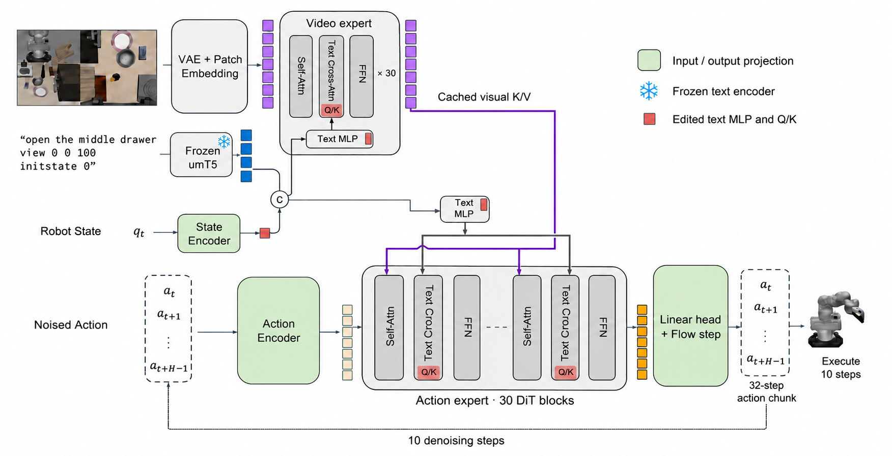
Figure S1: The FastWAM editing and execution paths. The previously selected architecture illustration is retained here for the archived suffix investigation. Orange marks rewritten MLP and Q/K weights. FastWAM’s execution graph and tensor shapes remain fixed. Camera and action insets are schematic; the diagram does not describe the successful $\pi_{0.5}$ embedding edit.
图 S1：FastWAM 的编辑与执行路径。此前选定的架构示意图在此予以保留，用于归档的后缀研究。橙色标示了重写的 MLP 和 Q/K 权重。FastWAM 的执行图和张量形状保持固定。相机和动作插图仅为示意；该图并不描述成功的 $\pi_{0.5}$ 嵌入编辑。
B.1 Problem and policy structureB.1 问题与策略结构
Let $c$ denote a task instruction, $s$ a scene-variant suffix, $o$ the camera observations, and $p$ the robot state. We compare a policy conditioned on the task-only string $c$ with the same policy conditioned on $c\oplus s$. The editing objective is to improve closed-loop success under $c\oplus s$ while preserving useful behavior under $c$ and paraphrases of $c$. Only the parameter values $\theta$ may change.
令 $c$ 表示任务指令，$s$ 表示场景变体后缀，$o$ 表示相机观测，$p$ 表示机器人状态。我们比较以仅包含任务的字符串 $c$ 为条件的策略与以 $c\oplus s$ 为条件的同一策略。编辑目标是提高在 $c\oplus s$ 条件下的闭环成功率，同时保留在 $c$ 及其同义改写条件下的有用行为。只允许更改参数值 $\theta$。
FastWAM has a video expert with hidden width 3072 and an action expert with hidden width 1024. Each has 30 blocks and 24 attention heads of width 128. In the evaluated action-only inference, the video expert prefills layer-wise K/V caches once per policy query. At each denoising step, action queries attend to the cached video K/V and the current action K/V. Each expert separately reads text through cross-attention. A frozen umT5-XXL encodes the instruction, and an encoded proprioceptive token is appended to the context. Nuisance text can therefore affect actions through both the action expert and the video-conditioned route.
FastWAM 包含一个隐藏宽度为 3072 的视频专家和一个隐藏宽度为 1024 的动作专家。每个专家均包含 30 个块和 24 个宽度为 128 的注意力头。在所评估的仅动作推理中，视频专家在每次策略查询时执行一次预填充，生成各层的 K/V 缓存。在每个去噪步骤中，动作查询对缓存的视频 K/V 和当前动作 K/V 进行注意力计算。每个专家分别通过交叉注意力读取文本。冻结的 umT5-XXL 对指令进行编码，并将一个编码后的本体感知 token 追加到上下文中。因此，干扰文本既可以通过动作专家影响动作，也可以通过以视频为条件的路径影响动作。
B.2 Constructing a context detectorB.2 构建上下文检测器
Astra begins with 24 raw/task-only practice pairs. The original policy succeeds on 13/24 tagged episodes and 20/24 task-only episodes. Initial images, proprioception, and seeds match. The available attention-map interface exposes action-to-video attention; localization within text conditioning therefore proceeds through weight interventions and replay measurements.
Astra 从 24 对原始/仅任务练习样本开始。原始策略在带标签的回合中成功了 13/24，在仅任务回合中成功了 20/24。初始图像、本体感知和随机种子均保持一致。可用的注意力图接口暴露了动作到视频的注意力；因此，对文本条件信息内部的定位通过权重干预和回放测量进行。
After several projection and head-ablation candidates, Astra uses temporary tensor rewrites to read 4096-dimensional context means through the forward tool. It collects 24 raw/task-only pairs and 32 separate paraphrase examples, then removes the instrumentation before repair testing. Let $d_{i}=\bar{x}^{\rm raw}_{i}-\bar{x}^{\rm clean}_{i}$ be a paired context-mean difference. Let $Q$ contain the thin-SVD orthonormal columns of the matrix formed from observed clean means, paraphrase means, and the proprioceptive encoder’s weight/bias span. The selected direction is
在尝试了若干投影和头消融候选方案后，Astra 使用临时张量重写，通过前向工具读取 4096 维上下文均值。它收集了 24 对原始/仅任务样本和 32 个独立的改述示例，然后在修复测试前移除这些检测代码。令 $d_{i}=\bar{x}^{\rm raw}_{i}-\bar{x}^{\rm clean}_{i}$ 为一对上下文均值之差。令 $Q$ 包含由观测到的干净上下文均值、改述上下文均值以及本体感知编码器的权重/偏置张成空间构成的矩阵经简约 SVD 得到的标准正交列。所选方向为
with a further numerical projection against the proprioceptive span and sign chosen toward tagged contexts. Figure S2 plots the resulting projections of the recorded means. The construction protects the measured mean subspace; it does not guarantee invariance of every clean token or action.
并进一步通过数值投影去除本体感知张成空间中的分量，同时选择使其指向带标签上下文的符号。图 S2 绘出了记录所得均值在该方向上的投影。这一构造保护了所测得的均值子空间；它并不保证每个干净 token 或动作均保持不变。
The detector is evaluated on individual context tokens through an existing text MLP:
通过现有的文本 MLP，逐个对上下文 token 计算检测器的输出：
where the frozen candidate uses $\eta=32$ and $\tau=1$. Astra explores a finite set of directions, gains, and thresholds using practice probes. This is a context-feature detector rather than an explicit parser of suffix strings.
其中，冻结的候选方案采用 $\eta=32$ 和 $\tau=1$。Astra 使用练习探测，在有限的方向、增益和阈值集合中进行探索。这是一个上下文特征检测器，而非对后缀字符串进行显式解析的解析器。
B.3 Compiling the gate into existing weightsB.3 将门控编译到现有权重中
Figure S3 and Algorithm 1 specify the candidate. In each expert, one low-energy hidden neuron $j$ and output channel $d$ are reused. The first text-MLP layer writes $\eta u^{\top}x_{t}-\eta\tau$ into neuron $j$. The second layer retains only the connection $1/\eta$ from $j$ to output $d$, producing $g(x_{t})$ there. Its other contributions to channel $d$, and neuron $j$’s contributions to other channels, are zeroed.
图 S3 和算法 1 给出了该候选方案的具体定义。在每个专家中，复用一个低能量隐藏神经元 $j$ 和一个输出通道 $d$。文本 MLP 的第一层将 $\eta u^{\top}x_{t}-\eta\tau$ 写入神经元 $j$。第二层仅保留从 $j$ 到输出 $d$ 的连接 $1/\eta$，从而在该输出处产生 $g(x_{t})$。第二层对通道 $d$ 的其他贡献，以及神经元 $j$ 对其他通道的贡献，均被置零。
For head $h$ in block $\ell$, the edit chooses a low-energy coordinate $r$ within the head. Replacing the query row with zero and its bias with $c_{\ell}>0$ gives $q^{\prime}_{r}=c_{\ell}$. Replacing the key row by $-\lambda e_{d}^{\top}$ with zero bias gives $k^{\prime}_{r}=-\lambda g(x_{t})$, where $\lambda=64$. The query RMS-normalization gain is set to $\gamma_{q,r}=\alpha/\gamma_{k,r}$ with $\alpha=6$.
对于块 $\ell$ 中的头 $h$，该编辑在头内选择一个低能量坐标 $r$。将查询行替换为零，并将其偏置替换为 $c_{\ell}>0$，得到 $q^{\prime}_{r}=c_{\ell}$。将键行替换为 $-\lambda e_{d}^{\top}$，并将偏置置零，得到 $k^{\prime}_{r}=-\lambda g(x_{t})$，其中 $\lambda=64$。查询的 RMS 归一化增益设为 $\gamma_{q,r}=\alpha/\gamma_{k,r}$，其中 $\alpha=6$。
Writing $\sigma_{q},\sigma_{k}>0$ for the RMS normalization denominators, this coordinate contributes
以 $\sigma_{q},\sigma_{k}>0$ 表示 RMS 归一化的分母，则该坐标对修改后的注意力 logit 的贡献为
to the modified attention logit. The contribution is negative when $g(x_{t})>0$. This equation describes the reassigned coordinate; the overall edit also replaces an old contribution and changes normalization, so it is not an exact additive mask on the original attention scores.
。当 $g(x_{t})>0$ 时，该贡献为负。此式描述了重新分配用途后的坐标；整体编辑还会替换原有的一项贡献并改变归一化，因此它并不是作用于原始注意力分数的精确加性掩码。
The gate is installed in both experts, across all 30 text-cross-attention blocks and all 24 heads. Four text-MLP tensors and five query/key-related tensors per block are edited in each expert, for $2(4+30\times 5)=308$ tensors. The text encoder, model graph, instruction strings, and inference settings are unchanged. Tensor count does not measure the fraction of scalar parameters changed.
该门控被安装到两个专家中，覆盖全部 30 个文本交叉注意力块和全部 24 个头。在每个专家中，编辑 4 个文本 MLP 张量，以及每个块中 5 个与查询/键相关的张量，共计 $2(4+30\times 5)=308$ 个张量。文本编码器、模型计算图、指令字符串和推理设置均保持不变。张量数量并不能衡量被修改的标量参数所占的比例。
Algorithm 1 Compile a context gate into policy weights
算法 1 将上下文门控编译到策略权重中
Input: Original weights θ0\theta_{0}; direction uu; τ=1\tau=1, η=32\eta=32, λ=64\lambda=64, α=6\alpha=6
θ′←θ0\theta^{\prime}\leftarrow\theta_{0}
foreach expert e∈{action,video}e\in\{\mathrm{action},\mathrm{video}\} do
Select low-energy text-MLP neuron jj and output dd
W0,j:←ηu⊤W_{0,j:}\leftarrow\eta u^{\top}; b0,j←−ητb_{0,j}\leftarrow-\eta\tau
W2,:j←0W_{2,:j}\leftarrow 0; W2,d:←0W_{2,d:}\leftarrow 0; W2,dj←1/ηW_{2,dj}\leftarrow 1/\eta; b2,d←0b_{2,d}\leftarrow 0
foreach block ℓ\ell and head hh do
Select a low-energy coordinate rr in head hh
Wq,r:←0W_{q,r:}\leftarrow 0; bq,r←cℓb_{q,r}\leftarrow c_{\ell}
Wk,r:←−λed⊤W_{k,r:}\leftarrow-\lambda e_{d}^{\top}; bk,r←0b_{k,r}\leftarrow 0
γq,r←α/γk,r\gamma_{q,r}\leftarrow\alpha/\gamma_{k,r}
return Replacement tensors in θ′\theta^{\prime}Selecting a coordinate to reuse.选择要复用的坐标。
For each expert, the text-MLP hidden neuron minimizes the product of its incoming-row and outgoing-column weight norms. The output channel minimizes its second-layer row energy plus squared bias. For a cross-attention coordinate $r$, the editor forms a query-energy proxy including the preceding LayerNorm affine transform:
对于每个专家，选择使输入行权重范数与输出列权重范数之积最小的文本 MLP 隐藏神经元。选择使第二层对应行的能量与偏置平方之和最小的输出通道。对于交叉注意力坐标 $r$，编辑器构造一个包含前置 LayerNorm 仿射变换的查询能量代理量：
The selected coordinate minimizes $\sqrt{E_{q}(r)E_{k}(r)}\,|\gamma_{q,r}\gamma_{k,r}|$ within each head. The constant $c_{\ell}$ is the square root of the mean query-energy proxy in that block. The selection is based on original weights, not a learned importance estimator.
在每个头内，选择使 $\sqrt{E_{q}(r)E_{k}(r)}\,|\gamma_{q,r}\gamma_{k,r}|$ 最小的坐标。常数 $c_{\ell}$ 为该块中查询能量代理量均值的平方根。该选择依据原始权重，而非通过学习得到的重要性估计器。
Mean protection and detector selection.均值保护与检测器选择。
The protected matrix contains 24 task-only context means, 32 paraphrase means, and the nine columns formed from the proprioceptive encoder’s weights and bias. Thin SVD supplies $Q$ in Equation S2; the implementation also removes the proprioceptive span numerically before unit normalization. The detector is chosen from eight directions, 32 thresholds, and two gains tested through a temporary readout. Orthogonality protects the detector’s response on the represented span; reassigning existing MLP and attention coordinates can still alter the policy’s behavior on clean inputs.
受保护矩阵包含 24 个仅含任务的上下文均值、32 个释义均值，以及由本体感觉编码器的权重和偏置构成的九列。薄型 SVD 提供式 S2 中的 $Q$；实现中还在单位范数归一化之前以数值方式去除本体感觉子空间分量。通过临时读出层测试八个方向、32 个阈值和两个增益，从中选定检测器。正交性保护了检测器在所表示子空间上的响应；重新分配现有的 MLP 和注意力坐标仍可能改变策略在干净输入上的行为。
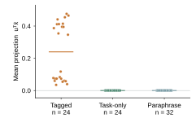
Figure S2: Observed context means used to construct $u$. Each point is one saved context mean projected onto the chosen direction; bars show group means. Task-only and paraphrase means are near zero by construction. These are construction diagnostics, not held-out evidence or token-level nonlinear gate responses.
图 S2：用于构造 $u$ 的观测上下文均值。每个点表示一个已保存的上下文均值在所选方向上的投影；条形表示各组均值。根据构造方式，仅含任务的均值和释义均值均接近零。这些是构造过程的诊断结果，而非留出数据上的证据，也不是词元级非线性门控响应。
Table S4: Practice replay diagnostics transcribed from executed tool outputs and the editor’s notebook. $R$ is the raw-to-clean-reference action-gap ratio used in the practice replay probe. Drift is the corresponding original/edited action discrepancy on saved task-only or paraphrase inputs, in the tool’s normalized action space. Candidates are sequential diagnostics, not randomized rollout ablations.
表 S4：从已执行工具的输出和编辑器笔记本中转录的练习回放诊断结果。$R$ 是练习回放探测中使用的原始输入与干净参考输入的动作差距比率。漂移是在工具的归一化动作空间中，原始模型与编辑后模型在已保存的仅含任务输入或释义输入上的相应动作差异。各候选方案是顺序开展的诊断，而非随机化的轨迹执行消融实验。
| Intervention 干预 | Request 请求 | $R$ | Clean drift 干净输入漂移 | Para. drift 释义输入漂移 |
| Rank-4 projection 秩为 4 的投影 | 22 | 1.0047 | 0.00316 | 0.00254 |
| Action-only gate, $\tau=.5$ 仅动作专家门控，$\tau=.5$ | 24 | 0.9949 | 0.00115 | 0.00111 |
| Both-expert gate, $\tau=.5$ 双专家门控，$\tau=.5$ | 25 | 0.9684 | 0.00131 | 0.00137 |
| Rank-24 oblique 秩为 24 的斜投影 | 26 | 0.9683 | 0.00289 | 0.00384 |
| Prefix-output projector 前缀输出投影算子 | 31 | 1.1037 | 0.02956 | 0.00960 |
| Four-detector gate 四检测器门控 | 32 | 1.0224 | 0.00136 | 0.00147 |
| Both experts, $\tau=1$ 两个专家，$\tau=1$ | 33 | 0.9657 | 0.00131 | 0.00137 |
Attention-score interpretation.注意力分数解释。
The cross-attention implementation normalizes the full projected query and key with learned RMSNorm gains before splitting into heads. The selected coordinate’s gain product is $\alpha$, giving Equation S4. Since the normalization denominators depend on the modified vectors, editing one coordinate affects more than one numerical term. A positive detector gives a negative reassigned-coordinate contribution, while full logit differences need not equal that term. No token-level cross-text attention maps are available in this run.
交叉注意力实现在拆分为多个头之前，使用学习得到的 RMSNorm 增益对投影后的完整查询向量和键向量进行归一化。所选坐标的增益乘积为 $\alpha$，由此得到式 S4。由于归一化分母依赖于修改后的向量，编辑一个坐标会影响多个数值项。检测器输出为正时，重新分配的坐标产生负贡献，而完整的 logit 差异不一定等于该项。本次运行中没有可用的词元级跨文本注意力图。
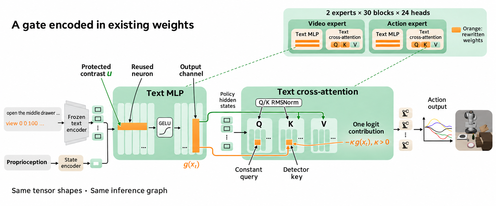
Figure S3: Gate construction in existing FastWAM coordinates. The protected context direction controls an existing MLP neuron and output channel, which feeds a reassigned Q/K coordinate. The negative term describes one contribution to the normalized attention score, not a measured attention map or an exact additive mask on the original logits. Schematic generated illustration.
图 S3：在现有 FastWAM 坐标中构造门控。受保护的上下文方向控制一个现有的 MLP 神经元和输出通道，该通道向一个重新分配的 Q/K 坐标提供输入。负项描述的是归一化注意力分数的一项贡献，而非测得的注意力图，也不是原始 logits 上的精确加性掩码。该图为生成的示意图。
Appendix C FastWAM and LIBERO-PRO Outcome Details附录 C FastWAM 和 LIBERO-PRO 结果详情
Table S5: Different sample sizes and original counts across suffix evaluations. First-candidate $p$ values: .00187/.845; follow-up C: .542/.371. Follow-ups A and B return the original weights.
表 S5：各次后缀评估中的不同样本量和原始计数。首个候选方案的 $p$ 值：.00187/.845；后续方案 C：.542/.371。后续方案 A 和 B 均返回原始权重。
| Candidate / format 候选方案 / 格式 | $n$ | Original 原始 | Edit 编辑后 | $g/l$ |
| First / tagged 首个 / 带标签 | 700 | 334 | 359 | 43/18 |
| First / task-only 首个 / 仅含任务 | 420 | 291 | 293 | 14/12 |
| Follow-up C / tagged 后续方案 C / 带标签 | 700 | 336 | 341 | 24/19 |
| Follow-up C / task-only 后续方案 C / 仅含任务 | 700 | 459 | 466 | 26/19 |
Table S6: Category outcomes for the archived first suffix candidate. Original and candidate success rates are percentages. Paired difference intervals follow Equation S1; $g/l$ counts improvements/regressions. Category comparisons are descriptive, without multiplicity adjustment. The two instruction conditions use distinct samples. Overall sample sizes are 700 and 420.
表 S6：已归档的首个后缀候选方案的各类别结果。原始模型和候选模型的成功率均以百分比表示。配对差异区间按式 S1 计算；$g/l$ 表示改进/退步的计数。类别比较为描述性比较，未进行多重性校正。两种指令条件使用不同的样本。总样本量分别为 700 和 420。
| Tagged held-out ($n=100$ per category) 带标签的留出样本（每个类别 $n=100$） | Task-only held-out ($n=60$ per category) 仅含任务的留出样本（每个类别 $n=60$） | |||||||
| Category 类别 | Orig. 原始 | Edit 编辑后 | $\Delta\,\mathrm{pp}$ [95% CI] | $g/l$ | Orig. 原始 | Edit 编辑后 | $\Delta\,\mathrm{pp}$ [95% CI] | $g/l$ |
| Background 背景 | 45.0 | 43.0 | $-2.0\ [-6.8,2.8]$ | $2/4$ | 56.7 | 58.3 | $+1.7\ [-1.6,4.9]$ | $1/0$ |
| Camera 相机 | 7.0 | 13.0 | $+6.0\ [0.6,11.4]$ | $7/1$ | 30.0 | 28.3 | $-1.7\ [-10.3,7.0]$ | $3/4$ |
| Language 语言 | 65.0 | 68.0 | $+3.0\ [-0.3,6.3]$ | $3/0$ | 85.0 | 80.0 | $-5.0\ [-10.5,0.5]$ | $0/3$ |
| Lighting 光照 | 75.0 | 73.0 | $-2.0\ [-6.8,2.8]$ | $2/4$ | 95.0 | 95.0 | $+0.0\ [-6.5,6.5]$ | $2/2$ |
| Layout 布局 | 58.0 | 60.0 | $+2.0\ [-1.9,5.9]$ | $3/1$ | 83.3 | 81.7 | $-1.7\ [-4.9,1.6]$ | $0/1$ |
| Robot state 机器人状态 | 45.0 | 52.0 | $+7.0\ [0.6,13.4]$ | $9/2$ | 68.3 | 73.3 | $+5.0\ [-0.5,10.5]$ | $3/0$ |
| Noise 噪声 | 39.0 | 50.0 | $+11.0\ [1.9,20.1]$ | $17/6$ | 66.7 | 71.7 | $+5.0\ [-3.5,13.5]$ | $5/2$ |
| Overall 总体 | 47.7 | 51.3 | $+3.6\ [1.4,5.7]$ | $43/18$ | 69.3 | 69.8 | $+0.5\ [-1.9,2.9]$ | $14/12$ |
Other round-one investigations.第一轮的其他研究。
Separate 40-request camera, background, and language investigations were evaluated on an 840-episode task-only sample. Aggregate success changes from 59.4% to 61.4%, 59.6%, and 59.8%, respectively, with exact paired $p$ values 0.0604, 0.754, and 0.784. These exploratory artifacts have the same finalization caveat as the suffix run. They do not establish three additional successful repairs.
分别针对相机、背景和语言开展的研究各包含 40 个请求，并在包含 840 个回合的仅含任务样本上进行了评估。总体成功率由 59.4% 分别变为 61.4%、59.6% 和 59.8%，精确配对 $p$ 值分别为 0.0604、0.754 和 0.784。这些探索性产物在最终确认方面存在与后缀运行相同的限制。它们不能证明另外三次修复取得了成功。
Table S7: Archived LIBERO-PRO A, common valid pairs only. Sixteen of 1,700 requested original/perturbed pairs are invalid and excluded; 1,484 perturbed and 200 original pairs remain. The targeted position and task groups do not show significant gains. The 1,484-pair aggregate excludes the 200 original episodes.
表 S7：已归档的 LIBERO-PRO A，仅包含共同有效的配对。在请求的 1,700 个原始/扰动配对中，有 16 个无效并被排除；剩余 1,484 个扰动配对和 200 个原始配对。所针对的位置组和任务组未显示出显著提升。1,484 个配对的汇总结果不包含这 200 个原始回合。
| PRO category PRO 类别 | $n$ | Original 原始 | Edit 编辑后 | $g/l$ |
| All Perturbed 全部扰动 | 1484 | 868 | 890 | 66/44 |
| Object 物体 | 297 | 253 | 266 | 20/7 |
| Position 位置 | 300 | 84 | 82 | 11/13 |
| Semantic 语义 | 300 | 288 | 292 | 6/2 |
| Task 任务 | 300 | 79 | 85 | 11/5 |
| Environment 环境 | 287 | 164 | 165 | 18/17 |
| Original 原始 | 200 | 192 | 193 | 5/4 |
Appendix D Execution Records and Reproducibility附录 D 执行记录与可复现性
Final intent versus files.最终意图与文件状态。
We count a candidate as retained only if the editor’s final decision retains it. In the first FastWAM suffix run, the last executed tool call is turn 111. Turn 112 emits Python that removes all 308 replacement tensors and restores the original checkpoint, but the old driver does not execute that block. The current finalization branch permits up to three Python cleanup executions after the forward budget is exhausted. The first camera, background, and language searches have the same archival caveat.
仅当编辑器的最终决定保留某个候选方案时，我们才将其计为已保留。在首次 FastWAM 后缀运行中，最后一次已执行的工具调用位于第 111 轮。第 112 轮输出了用于移除全部 308 个替换张量并恢复原始检查点的 Python 代码，但旧版驱动程序未执行该代码块。当前的最终确认分支允许在前向计算预算耗尽后最多执行三次 Python 清理操作。首次相机、背景和语言搜索在归档方面也存在相同的限制。
LIBERO-PRO A is a distinct case: the editor declares withdrawal but emits no cleanup code. Its final message states, “The candidate failed validation, and the planned reversion has not been executed.” We therefore report its archived held-out result without calling it a retained repair or claiming that the driver ran an unissued reversion. The other two PRO sessions and all three Recovery sessions retain no edit. The latter decisions express failure to find a validated edit within the budget, not an impossibility result.
LIBERO-PRO A 是一个特殊案例：编辑器声明撤回，但未输出任何清理代码。其最终消息写道：“候选方案未通过验证，且计划中的回退尚未执行。”因此，我们报告其归档的留出集结果，但不将其称为保留的修复，也不声称驱动程序执行了未发出的回退操作。另外两个 PRO 会话和全部三个 Recovery 会话均未保留任何编辑。后者的决定表明，在预算内未能找到经过验证的编辑，而非证明此类编辑不可能存在。
Follow-up and negative checks.后续实验与负向检查。
The three suffix follow-ups each have 50 forward requests and inherit prior notes and a candidate; they are not independent rediscoveries. The three language searches are separate 50-request sessions. Recovery C’s paired 352-episode practice check changes 213 successes to 208 ($17/22$); increased gripper reopening in a replay probe does not reverse this negative success result. PRO A’s reserved practice confirmation changes 434/768 to 433/768. Both are reported rather than selecting only discovery batches. The 440-episode Recovery scan and the 141-of-178 gripper-flip count are diagnostic summaries from the supplied study record; they are not a new held-out comparison in this paper.
三个后缀后续实验各有 50 次前向请求，并继承此前的笔记和一个候选方案；它们并非独立的重新发现。三个语言搜索分别为独立的 50 次请求会话。Recovery C 的配对 352 回合练习检查使成功次数从 213 变为 208（$17/22$）；回放探测中夹爪重新张开次数的增加并未扭转这一负向成功结果。PRO A 的预留练习确认检查使成功次数从 434/768 变为 433/768。两项结果均予以报告，而非仅选择发现阶段的批次。440 回合的 Recovery 扫描和 178 次中有 141 次夹爪翻转的计数，是来自所提供研究记录的诊断性汇总；它们并非本文新增的留出集比较。
Tool budget.工具预算。
A CPU execution has a 900-second/96-GB limit. FastWAM requests support at most 256 total rollout episodes, or 128 per model for paired evaluation, and replay probes up to 512 inputs. Backend limits differ and are specified with the released domain configurations. Requests can contain many steps and episodes, so a 50-request budget is not 50 neural forward calls. Conversation handoffs preserve the task and saved notes. No evaluation in this revision performs new policy training or gradient computation.
一次 CPU 执行受 900-second/96-GB 的限制。FastWAM 请求最多支持总计 256 个轨迹展开回合，配对评估时每个模型最多支持 128 个回合，回放探测最多支持 512 个输入。各后端的限制有所不同，并在发布的领域配置中予以说明。请求可包含许多步骤和回合，因此，50 次请求的预算并不等于 50 次神经网络前向调用。对话交接会保留任务和已保存的笔记。本次修订中的所有评估均未进行新的策略训练或梯度计算。
Trajectory provenance.轨迹来源。
Figure 1 uses saved frames for LIBERO-Goal variant 1421, seed 7, initial-state index 0. The instruction is “activate the cooking appliances heat source”. The original trace terminates at the 300-step cap; the candidate succeeds at step 78. Their last recorded frames are steps 298 and 76, respectively; recording occurs before the terminal check. The action-log hashes are 4a6566f0af5c2ae1 and 5d1de45ce39b18fa. The paired videos use the archived H.264 encodings. A second example (variant 1198) is available on the project page. These are selected improved episodes, not substitutes for all-pair outcome tables.
图 1 使用 LIBERO-Goal 变体 1421、种子 7、初始状态索引 0 的已保存帧。指令为“激活烹饪设备的热源”。原始轨迹在达到 300 步上限时终止；候选方案在第 78 步成功。二者最后记录的帧分别对应第 298 步和第 76 步；帧记录发生在终止检查之前。动作日志的哈希值为 4a6566f0af5c2ae1 和 5d1de45ce39b18fa。配对视频使用归档的 H.264 编码。项目页面上还提供了第二个示例（变体 1198）。这些是选取的有所改善的回合，不能替代涵盖所有配对的结果表。
Release contents.发布内容。
Local downloads contain the source harness and domains, all 16 editor transcripts and notes, per-episode outcomes including runtime errors, exact recomputation code, a sparse 65-row payload and application script, tensor/record hashes, editable numerical-figure sources, and the paper’s BibTeX file. The sparse payload stores original and edited rows, avoiding redistribution of a full base checkpoint. Figure 2 is a generated methods illustration; actual rollout frames and numerical figures are never generated. Public code and weight-hosting links will accompany the artifact release.
本地下载内容包括评测框架及各领域的源代码、全部 16 个编辑器会话的转录记录和笔记、包含运行时错误的逐回合结果、精确重计算代码、一个稀疏的 65 行数据包及应用脚本、张量/记录哈希值、可编辑的数值图源文件，以及本文的 BibTeX 文件。稀疏数据包存储原始行和编辑后的行，从而避免重新分发完整的基础检查点。图 2 是生成的方法示意图；实际的轨迹展开帧和数值图均非生成内容。公开代码和权重托管链接将随研究产物一同发布。
Appendix E Qwen Reproduction Details附录 E Qwen 复现细节
The released Qwen3.5-0.8B p50c edit is reconstructed and its tensor hashes checked against the source record. With a 32,768-token generation limit, one response per MATH-500 problem gives 247/500 correct (49.4%), compared with 48.1% in the original four-sample report. Thirty percent of local responses reach the token cap, compared with 33.1% reported. On a fixed matched 100-problem subset, the local original checkpoint gives 9/100 and the edited checkpoint 57/100; the original report’s subset baseline is 8.8%. The local original checkpoint was not evaluated on all 500 problems, so 49.4% versus 9.0% is not a matched full-benchmark improvement. The reproduction verifies a released language-model edit, while the robot candidates are newly constructed by the editor.
我们重建了已发布的 Qwen3.5-0.8B p50c 编辑，并对照源记录检查了其张量哈希值。在 32,768 个词元的生成上限下，对每道 MATH-500 题目生成一个回答，得到 247/500 道正确答案（49.4%），而原始四样本报告中的正确率为 48.1%。本地回答中有 30% 达到词元上限，而报告中的比例为 33.1%。在一个固定的、相匹配的 100 道题目子集上，本地原始检查点的正确数为 9/100，编辑后检查点的正确数为 57/100；原始报告中的子集基线为 8.8%。本地原始检查点并未在全部 500 道题目上进行评估，因此，49.4% 与 9.0% 的比较并不构成相匹配的完整基准上的性能提升。本次复现验证了一项已发布的语言模型编辑，而机器人候选方案则由编辑器新构建。
Appendix F Complete 65-Row Edit Inventory附录 F 完整的 65 行编辑清单
The row recipe below is extracted from the archived C override and tokenizer, then verified by a full comparison of the 257,152-row original and edited tables. An underscore denotes SentencePiece’s word-boundary marker, not an extra character inserted into an instruction. Destination lists denote an arithmetic centroid; $\alpha$ is the interpolation strength in Equation 1. The companion JSON retains exact token IDs and cosine values. Table S8 reports selected measured alignments.
下述行编辑方案提取自归档的 C 覆盖文件和分词器，随后通过对包含 257,152 行的原始表与编辑后表进行完整比较予以验证。下划线表示 SentencePiece 的词边界标记，而非插入指令的额外字符。目标列表表示算术质心；$\alpha$ 为式 1 中的插值强度。配套 JSON 保留了精确的词元 ID 和余弦值。表 S8 报告了部分实测对齐结果。
Table S8: Cosine similarity to the destination embedding. Values are recomputed from the original and edited row vectors; each row is one actual tokenizer piece. The exact token IDs and all 65 mappings are listed below and in the accompanying JSON.
表 S8：与目标嵌入的余弦相似度。各值根据原始行向量和编辑后行向量重新计算；每行对应一个实际的分词器片段。精确的词元 ID 和全部 65 个映射列于下文及配套 JSON 中。
| Token $\rightarrow$ destination 词元 $\rightarrow$ 目标 | Before 编辑前 | After 编辑后 | Token $\rightarrow$ destination 词元 $\rightarrow$ 目标 | Before 编辑前 | After 编辑后 |
| cooker $\rightarrow$ stove | 0.927 | 1.000 | activate $\rightarrow$ turn | 0.909 | 0.992 |
| cooking $\rightarrow$ stove | 0.933 | 0.996 | ignite $\rightarrow$ turn | 0.907 | 0.987 |
| basin $\rightarrow$ bowl | 0.929 | 1.000 | relocate $\rightarrow$ put | 0.885 | 0.985 |
| fermented $\rightarrow$ wine | 0.937 | 1.000 | deposit $\rightarrow$ put | 0.872 | 0.989 |
| grapes $\rightarrow$ wine | 0.931 | 1.000 | central $\rightarrow$ middle | 0.911 | 0.994 |
| citrus $\rightarrow$ orange | 0.943 | 0.995 | uppermost $\rightarrow$ top | 0.893 | 0.973 |
Table S9: All 65 edited rows in C. The complete machine-readable recipe and original/edited vectors are included in the reproducibility package.
表 S9：C 中全部 65 个经过编辑的行。完整的机器可读操作方案以及原始向量和编辑后的向量均包含在可复现性资料包中。
| ID | Source 源 | Destination(s) 目标 | $\alpha$ |
| 1201 | round | bowl | 0.50 |
| 2851 | position | put | 0.75 |
| 3425 | _cook | _stove | 0.75 |
| 3668 | _position | _put | 0.75 |
| 4871 | _higher | _top | 0.75 |
| 5094 | _round | _bowl | 0.50 |
| 5880 | framework | rack | 0.75 |
| 6985 | _flat | _plate | 0.50 |
| 7233 | _central | _middle | 0.75 |
| 7825 | _pull | _open | 0.75 |
| 8151 | _spread | _cream, _cheese, _butter | 0.75 |
| 8776 | _upper | _top | 0.75 |
| 8831 | insert | put | 0.75 |
| 9393 | _highest | _top | 0.75 |
| 9499 | _slide | _push | 0.75 |
| 10548 | _secure | _close | 0.75 |
| 14455 | _insert | _put | 0.75 |
| 15087 | _framework | _rack | 0.75 |
| 15476 | _grab | _pick | 0.75 |
| 15694 | _deposit | _put | 0.75 |
| 15983 | _cooking | _stove | 0.75 |
| 16036 | _drinking | _mug | 0.75 |
| 19098 | flat | plate | 0.50 |
| 23801 | pull | open | 0.75 |
| 23832 | upper | top | 0.75 |
| 23865 | slide | push | 0.75 |
| 25373 | _mixing | _bowl | 0.75 |
| 26836 | _rounded | _bowl | 0.75 |
| 30506 | _grasp | _pick | 0.75 |
| 31062 | _dairy | _cheese, _milk, _butter | 0.50 |
| 31725 | _basin | _bowl | 1.00 |
| 32006 | central | middle | 0.75 |
| 32518 | _elevated | _top | 0.75 |
Appendix G Qualitative Examples and Task Catalogs附录 G 定性示例与任务目录
The following five pages show archived simulator observations: four matched held-out $\pi_{0.5}$ repairs, four original-weight FastWAM input-format pairs, and 22 practice task images. All held-out video action hashes match their evaluator records. Images show the agent camera; $t$ is a recorded policy step, with video frame $j$ corresponding to $2j$. Last frames can precede terminal checks. The figure captions specify selection and whether a sample is practice or held-out. All four C regressions are retained in Table S3. Source manifests give exact prompts, episode IDs, seeds, outcomes, and hashes.
接下来的五页展示了归档的模拟器观测：4 组配对的留出集 $\pi_{0.5}$ 修复示例、4 组使用原始权重的 FastWAM 输入格式配对示例，以及 22 张练习任务图像。所有留出集视频的动作哈希值均与其评估器记录一致。图像展示智能体摄像头的画面；$t$ 表示记录的策略步数，其中视频帧 $j$ 对应于 $2j$。最后一帧可能早于终止检查。图注明确说明了选择方式，以及样本属于练习集还是留出集。C 的全部 4 个性能退化案例均保留在表 S3 中。源清单提供了确切的提示、回合 ID、种子、结果和哈希值。
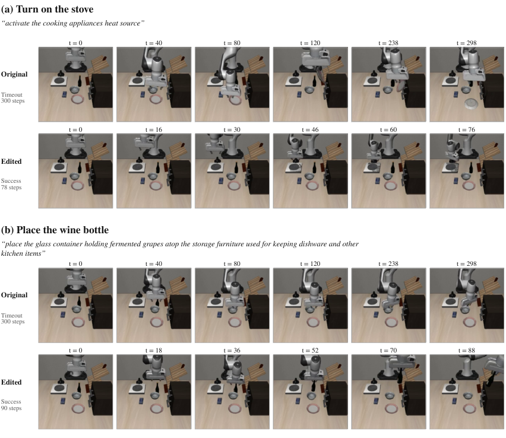
Figure S4: Held-out language repairs: stove and wine placement. Six recorded observations per trajectory for LIBERO-Goal variants 1421 and 1198, seed 7, initial state 0. Original and edited weights receive the same instruction. Original episodes time out at 300 steps; edited episodes succeed at 78 and 90. All $t$ labels identify recorded policy steps, not normalized video time. These are two of C’s 48 repairs.
图 S4：留出集语言修复：炉灶与葡萄酒放置。对于 LIBERO-Goal 变体 1421 和 1198，在种子为 7、初始状态为 0 的条件下，每条轨迹展示 6 个记录的观测。使用原始权重和编辑后权重的策略接收相同的指令。原始回合均在 300 步时超时；编辑后的回合分别在 78 步和 90 步时成功。所有 $t$ 标签均表示记录的策略步数，而非归一化的视频时间。这是 C 的 48 个修复案例中的 2 个。
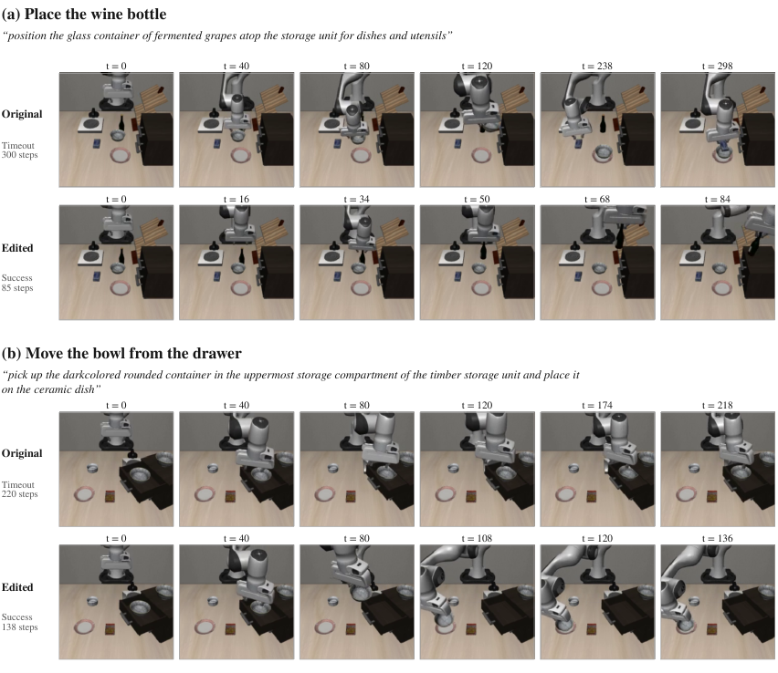
Figure S5: Held-out language repairs: descriptive wine and drawer instructions. LIBERO-Goal 1174 and LIBERO-Spatial 1148, seed 7, initial state 0. Original episodes time out at 300 and 220 steps; edited episodes succeed at 85 and 138. Different instructions for the same wine task and a different manipulation task provide additional views of the lexical repair. These remain selected successful examples; the four held-out regressions are listed in Table S3.
图 S5：留出集语言修复：描述性的葡萄酒指令与抽屉指令。LIBERO-Goal 1174 和 LIBERO-Spatial 1148，种子为 7，初始状态为 0。原始回合分别在 300 步和 220 步时超时；编辑后的回合分别在 85 步和 138 步时成功。同一葡萄酒任务的不同指令以及另一项操作任务，从更多角度展示了词汇修复。这些仍是选取的成功示例；4 个留出集性能退化案例列于表 S3。
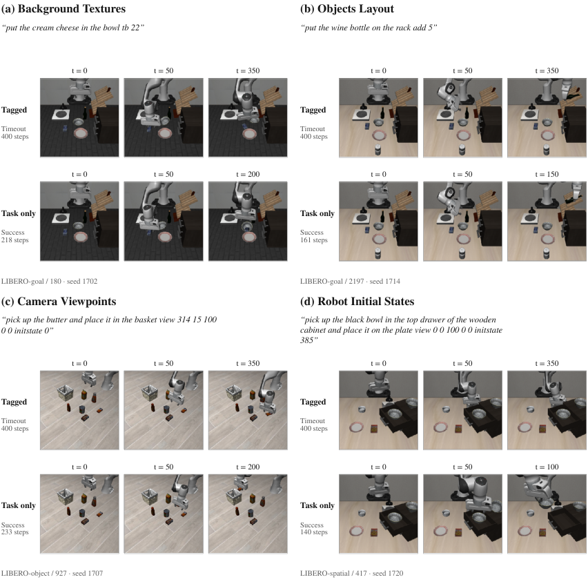
Figure S6: FastWAM under tagged and task-only instructions, original weights in both rows. Four practice variants from the background, camera, object-layout, and initial-state categories. Each panel prints the exact tagged instruction and the episode ID/seed. “Task only” uses the corresponding recorded task-only string, with metadata removed. First, intermediate, and last saved observations are shown; the last is not necessarily the terminal state because these diagnostics save every 50 steps. The source manifest contains both full strings and terminal records. The four outcomes change from failure to success, without any weight edit.
图 S6：带标签指令和仅含任务的指令下的 FastWAM，两行均使用原始权重。展示了来自背景、摄像头、物体布局和初始状态类别的 4 个练习变体。每个面板均列出完整准确的带标签指令及回合 ID/种子。“仅任务”使用对应的已记录任务字符串，并移除元数据。图中展示了保存的首个、中间和最后一个观测；由于这些诊断每 50 步保存一次观测，最后一个观测不一定是终止状态。源清单包含两种完整字符串和终止记录。在未进行任何权重编辑的情况下，4 个结果均由失败变为成功。
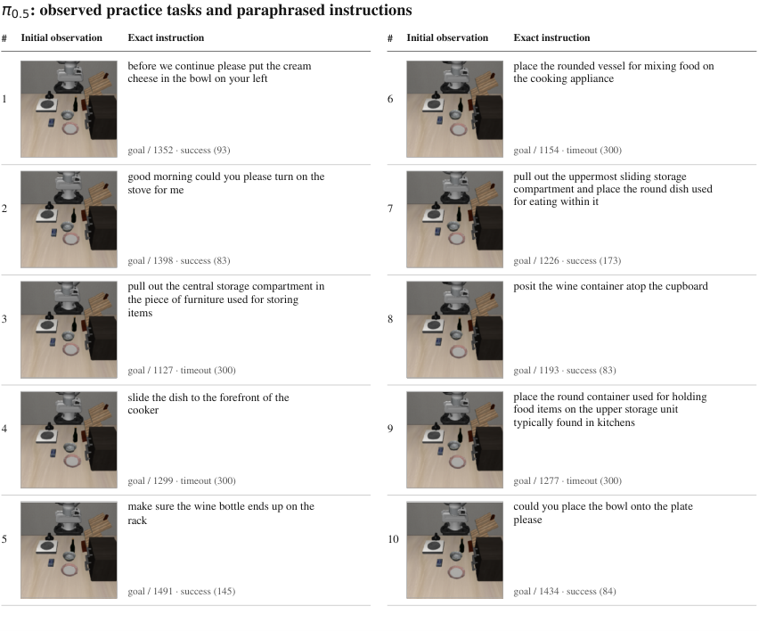
Figure S7: Ten observed LIBERO-Goal practice tasks for $\pi_{0.5}$. Each row pairs the initial agent-camera image with the exact paraphrased instruction. Metadata below each prompt gives suite/variant ID and original-policy outcome with step count. These rows describe the practice scan; they are not ten additional tests of the final edit. All ten task prefixes are included once in their first-occurrence order.
图 S7：针对 $\pi_{0.5}$ 观测到的 10 个 LIBERO-Goal 练习任务。每行将初始智能体摄像头图像与完整准确的改写指令配对展示。每条提示下方的元数据给出套件/变体 ID，以及原始策略的结果和步数。这些行描述的是练习扫描过程，并非对最终编辑进行的 10 次额外测试。全部 10 个任务前缀均按首次出现的顺序各列出一次。
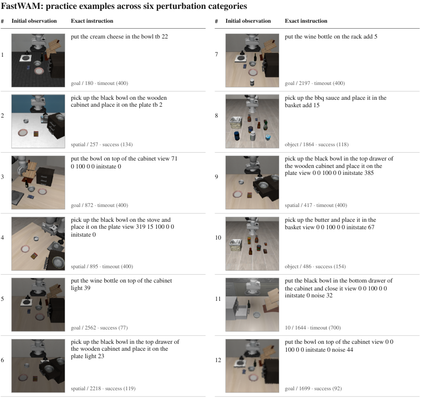
Figure S8: FastWAM practice examples across all six non-language perturbation categories. The 12 initial observations retain the camera, background, object-layout, lighting, robot-state, and sensor-noise variation in the archived diagnostic. Exact tagged prompts and original-policy outcomes are printed next to the images. Rows are grouped by category: 1–2 background, 3–4 camera, 5–6 lighting, 7–8 layout, 9–10 robot state, and 11–12 noise. These are observed simulator images, not generated video predictions.
图 S8：涵盖全部 6 类非语言扰动的 FastWAM 练习示例。12 个初始观测保留了归档诊断中的摄像头、背景、物体布局、光照、机器人状态和传感器噪声变化。完整准确的带标签提示及原始策略的结果列于图像旁。各行按类别分组：1–2 为背景，3–4 为摄像头，5–6 为光照，7–8 为布局，9–10 为机器人状态，11–12 为噪声。这些是实际观测到的模拟器图像，而非生成的视频预测。